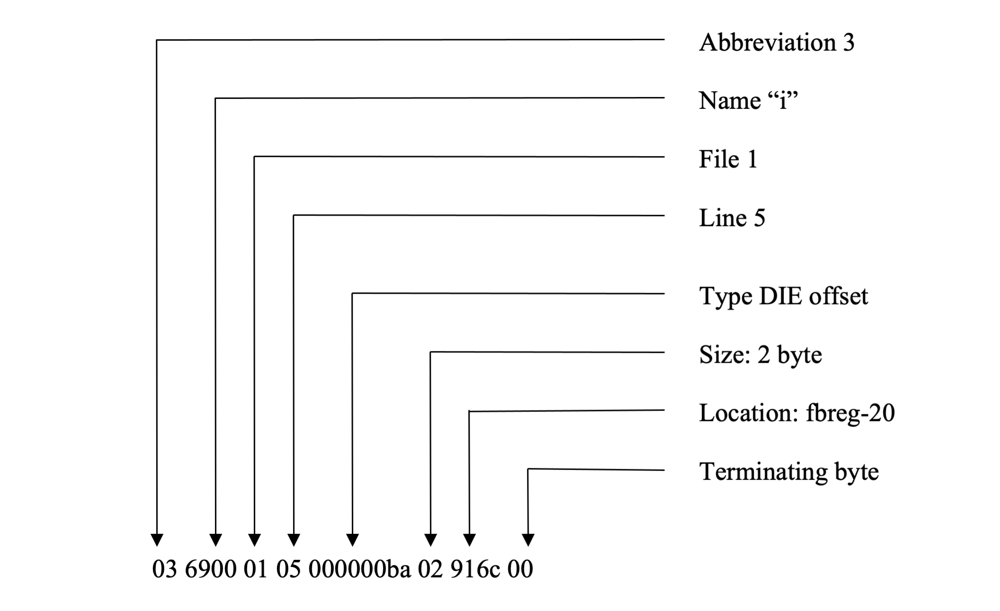
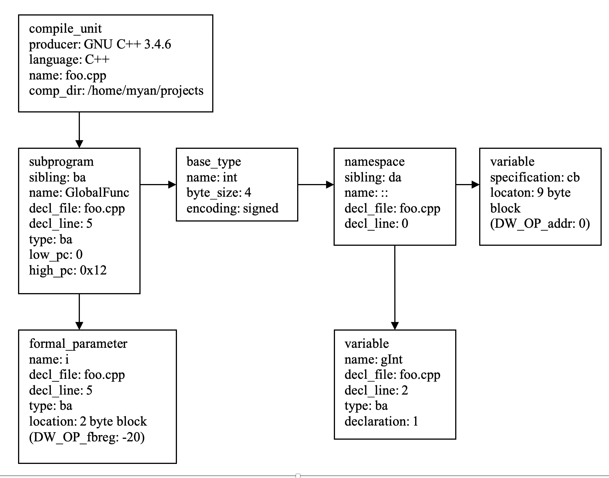
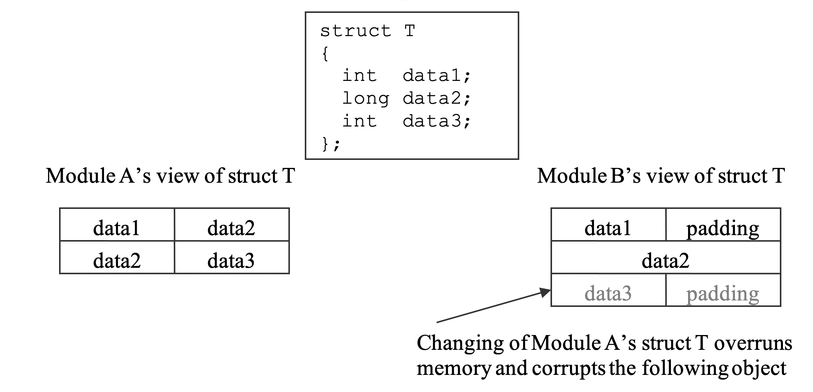

更新
2024-07-05
本书已经出版
由于本库的草稿是我之前一个人写的，所以质量和正确性都不如经过两位作者和出版社编辑审阅和校正过的书稿。
如果你想阅读更加完善的版本，推荐购买正版书籍。
更新
2023-12-20 本书已经出版， [高效C/C++调试] ISBN: 9787302649717
译者注
Effective Debugging by Michael Yan，讲述了如何更有效率地调试大型程序（以C/C++为例）的方法和技能。书中例子不仅丰富而且都是从实际的工作经验提取，观点和方法有效且具有可行性。
涉及的话题有：
- 调试符号
- 内存管理器数据结构
- 如何调试内存损坏bug
- C/C++对象布局
- 如何拓展调试器
- 优化后的程序怎么调试
- 进程镜像
- 等等
我自己读了以后，受益匪浅，萌生了翻译成中文的想法。经过Michael的同意，于是开始了断断续续地翻译，在这个过程中，学到了许多，也加深了理解。
本书都是我自己理解了以后的翻译，并对书中原来使用gdb脚本程序编写的插件，使用了最新的core analyzer作了替换（如果可以替换的话）。因为core analyzer是Michael通过改造gdb将书中的点子变成了gdb的命令，使用更方便以及更强大。
在线阅读网址：https://celthi.github.io/effective-debugging-zh/
有些是我自己的理解，标记开头为XT，如，
XT: 举个例子可能会更好理解，如果申请32字节，那么返回的内存块的地址必须是可以整除32
限于本人水平，错误难免，请大家不吝赐教，或者提PR.
关于作者
http://core-analyzer.sourceforge.net/index_files/Page525.html
关于译者
https://www.zhihu.com/people/lan-tian-89
一些说明
-
有一些暂时找不到跟英文对应的词语，要么保留英文词，如bug；要么我根据自己的理解选了词，如unwind callstack，回卷调用栈。如果有更好的翻译，请不吝赐教。（在知乎，有同学建议“回溯”，经过推敲，个人更喜欢回卷：一是回溯已经被用于其他意思了，如回溯算法。二是unwind，wind是展开的意思，un-wind则对应着往回收，回卷有点像把一个摊开的饼往回收。）
-
如果有一些内容我不理解，我在翻译的附近标上(??)，提示可能翻译错误，方便日后推敲再次翻译。
-
可能会添加一些章节，因为现在新的调试技术的出现，目前计划是使用Python拓展gdb，以及Linux的符号服务器debuginfod。
License
如果商业用途，请联系译者和原作者。
更新
2024-07-05
本书已经出版
由于本库的草稿是我之前一个人写的，所以质量和正确性都不如经过两位作者和出版社编辑审阅和校正过的书稿。
如果你想阅读更加完善的版本，推荐购买正版书籍。
引言
这是一本关于调试的书。多年以来，作为一名程序员写代码和调试，我经历了过山车般的情绪变化：困惑，失望，兴奋，以及不停地重复这些。当处理看上去永无止境的bugs时，这是非常真实的。随着我获得了更多的调试技巧，学习到更多产品和架构知识，大部分问题变得容易解决。但是，还是时不时有一些极难的bugs看上去不能解决，需要花费好多小时甚至是好几天去缩小范围和修复极难的问题。
我记得有一次，花了我几个月的时间去修复一个在客户服务器上， 只在星期二出现的问题(稍后的章节我会讲这个实战例子)。当然，这并不仅仅是只发生在我身上的故事。很多软件工程师具有同样的经历。因为计算机在几十年前就已经侵入到了我们的生活中，软件行业已经积累了一页接着一页的遗留代码。我们中的很多人需要投入大量的时间来维护和完善已有的程序。即使你为新的项目写新的代码，迟早也要调试它。喜欢与否，调试bug是不可避免的。它是我们作为软件开发工程师每天工作的一部分。
另一方面，调试也可以有乐趣。我学到了许多揭露和寻找bugs的技巧，尝到了许多经历挫折和无聊时间后的兴奋。每当我解决具有挑战性的案子，我获得同事们的赞美。它也使得我感觉像一个真正的侦探。随着我在实战中积累更多的经验，我更加相信通过正确的解决方案和基础的技能，bugs可以被有效地发现。这么多年，我总是听到”它是我见过的最奇怪的事情“，”这块代码存在了好多年。如果它有bug，它早该失败了“，或者”我已经审阅我的代码好多遍了，它不可能发生“。
不管一个问题表面上是多么的奇怪或者不可能，当我们在一天结束的时候找到原因，一切都说得通了。毕竟，计算机是那么的虔诚地，它完全地照着我们编写的方式运行，即使那是错误的方式。
这本书讨论调试方法论。我知道已经有很多关于这个话题的优秀书籍。但是，我觉得我可以从我个人现场实战经历贡献一点。从学校毕业以后，跟每一个人一样，我读了各种关于编程和调试的书籍。我曾经以为我理解它们，并且有信心解决任何问题。
但是现实的问题总是比书上给的例子更复杂。我经常在工作上没有任何线索，不能把书上的知识应用到实际的问题。
回想起那些稚嫩的开始时光，一部分原因是我没有完全理解书里的内容，一部分原因是大部分书籍都是从设计和编程的角度。它们可能填充着如何使用调试器的命令，但是当一个问题的类型和维度迷雾重重的时候，它们缺乏如何从开始去分解问题，以及对比调试策略和不同调试器的优劣。我看到很多资历浅的程序员饥渴地启动一个调试器，但是缺乏一个清晰的计划如何去使用它。对于一些人来说，调试就是使用调试器而已。
在这本书，我将通过深入某些内部的结构，展示许多调试过程的实战例子和可操作性的建议，缩小理论知识和可用技能的沟壑。
本书的例子包含了许多代码片段和实战故事。我尽可能地使用实际发生的例子，除非某些例子中，简明性和清楚程度优于实战例子。里面也有许多页用于讲述一些调试器插件和工具的开发。这些工具增强了现有的调试器并且拓展了我们的视野。它们要么提供新的角度或者帮助我们更深入地查看问题。尽管本书主要阐述C/C++，但是底层的方法是通用和独立于具体语言的。
特定调试器、内存管理器或者编译器的内部实现通常不被教材覆盖。这些知识不被大部分程序员熟悉，因为它不是设计和编程阶段关注的，常规调试也不需要。一些人可能认为除了写这些软件的人，没有必要去学习这些知识。但是，它对我们可以观察的和当bug活跃时什么不可以看到，有深远的作用。
如果你在这个方面呆了足够长的时间，你会遇到需要足够深入的理解程序行为的情况。举个例子，调试器可能不可以正确地显示一个局部变量，因为代码优化或者缺少足够的调试符号；如果栈被极大损坏，调试器不可以打印正确的调用栈，因为它依赖保存在栈上的特定数据结构；程序可以在看起来不可能crash的地方crash。在这些情况下，我们需要挖掘得比通常用户更深：我们需要审查编译器布置的栈空间，或者内存管理管理的堆数据结构，或者任何需要手动重新生成调用栈和数据对象的过程。
在本书中，我尝试铺就调试符号，调试器内部实现，内存管理器的内部结构，分析优化后的程序和C++对象模型等等基础知识。这些知识肯定可以帮助你打败学习瓶颈和进一步让你的调试技能进入下一个水平。
许多非法操作如常见的内存溢出，重复释放内存块，访问释放后的对象，使用未初始化的变量等等的后果，根据标准和文档是未定义行为。这基本上说违背的后果的实际行为是完全随机或者依赖实现；它可能在一个环境无害，但是在另一个环境就是灾难性的。经典的例子是：同样有bug的代码在一个平台没发生任何事，工作正常，但是在另一个环境，程序就会crash。最坏的情况是一个bug在开始的时候没有任何错误的迹象，但是在它干完坏事很久以后出现意料外的行为。
从调试的角度看，明白在特定实现的”未定义“的行为是必要的。这跟我们不知道也不应该假设任何关于”未定义“行为的设计和编程实践过程是相违背的。一个具体实现的内部数据结构不同于另一个实现。所以有些人会不去关心学习”未定义“行为的一丝一毫。但是，我们面对可能由未定义行为导致的问题时，这些关于内部数据结构的知识是引领我们走出迷雾，通向最后的解决办法。所以在我看来，知道一个程序在这些未定义行为下如何错误是调试许多困难问题的基本技能。这已经被我自己的工作经历证实。本书中很多例子显示了我们怎样可以借助这些知识来更有效率的调试。
本书假设读者具有基本的计算机科学和软件开发学习经历。他/她至少具有一年的实际编程经验和知道怎么使用一个调试器解决复杂一点的问题。整本书中，我尽量关注书的主题——更有效率地调试。为了不跑题，一些相关的概念和术语被简短描述或者跳跃性地串联在一起。对于核心知识，我尽量以一种实操性方式，可能不完全准确或者学术性，来解释它们。我们的目的是帮助你掌握基本的概念，基于此，你可以快速的应用这些知识到你的调试实践中。
在今天的互联网，可以很方便地从网络获取几乎所有事物的权威性定义。如果你不熟悉一些在书中提及且没有解释很详细的点，或者你只是想知道某个话题更多的细节。你应该可以通过搜索解决疑惑。本书末尾的引用也可以给你提供线索。希望本书没有重复很多你已经知道或者一些可以很容易获取的东西，如怎么使用一个工具性的命令肯定在它的手册中清楚地解释了。
许多章节是独立的，你可以跳跃到任何你感兴趣或者适合你当前工作的章节。跳过你熟悉或者不感兴趣的章节是没有问题的。一些章节进入到调试器、运行时或者语言的底层细节。也许这些知识不是必须的，但是它确实武装你面对更复杂的问题。许多本书的例子都是Linux/x86_64平台的。但是，它的基础方法通过微小的调整可以应用到其他平台。
附录提供了其他平台丰富的例子。鼓励读者阅读跟随本书的源文件，生成对应的项目和把玩它们。这些实战的例子可以进一步帮助你理解书中讨论的话题。你也可以基于它们开发你自己的项目。实际上，一些程序是我为了工作开发的，从此以后变得不可或缺。源代码大部分都是跨平台的。如果你碰巧工作在其中一些平台，它可能马上可以引起你的兴趣。如果不碰巧，那么当你理解这些设计背后的思路，自己写工具也不是那么困难。在附录中，你可以找到更多平台(AIX/PowerPC, Solaris/SPARC, Windows/x86)相关信息，当你需要的时候，它们可以作为参考。
根据我的个人经验，许多程序bugs，特别是用C/C++写的程序，是内存相关的问题。从各个角度理解内存是怎么分配和使用是非常有必要的。本书的大部分聚焦应用程序、编译器、内存管理器、系统加载器/连接器和内核虚拟内存如何从微观到宏观看待一块内存。
内存是动态资源，在程序执行的各个阶段会改变。你将看到内存管理器是如何分配内存，编译器怎么在分配的内存块中布局应用程序的数据结构，栈是如何被局部变量和函数参数使用的，以及系统链接器和加载器跟系统虚拟内存管理器合作创建进程的虚拟地址空间。
应用程序以源文件声明的形式看数据对象：要么是原始的数据类型，要么是其他类型的聚合。编译器会添加更多的隐藏数据成员如指向虚拟函数表的指针和必要时为了对齐的填充。为了满足对齐要求和它自己的隐藏标签，内存管理器会插入额外的字节。系统内核负责使用由页构成的段来记录进程的内存。当研究一个有疑问的数据对象时，一个有经验的工程师可以理解以上全部组件的视角：从编译器视角，它的大小和结构定义；从内存管理器的视角，内存块被释放了还是使用中？从链接器和加载器的角度，它是在代码段，全局数据段、堆数据还是栈段？从内核虚拟内存管理器的角度看，它是不是被某些权限比特保护着？所有这些信息可以作为创建一个理论的基石，验证或证伪程序错误原因的假设。不用说，当调试跟内存相关的问题时，这些知识是无价的。
在许多情况下，调试是一个试错的过程。一个特定的问题有各种可能的原因。一个工程师通常通过分析问题的症状来开始调研，接着根据观察和推理，提出一个原因的假设，证明这个假设，建议一种修复方案，测试和验证修复方案。如果理论无法解释现象或者修复方案不行，他/她需要重复上面的步骤。每个人有他喜欢的方法，风格和工作来完成这个任务。调试同一个问题有许多种方法。这本书展示的例子和技巧是作者过去使用的方法。从各个角度看，他们不是最有效率的方式。我的目的是与你分享这些点子，这样如果你还没有它们，那么你可以把它们加入到你的工具箱里。很多时候，当一种方法看上去没有出路，另外一个使用其他工具的方式可能就是你所需要的。同样地，我也非常欢迎你可以跟我们分享你的经验和调试方法论。
非常感谢李燕启发和鼓励我开始和完成这本书。Ryan Richardson博士指出了这本书许多语法错误。对于他的评语和纠正，我向他表示我深深的感谢。
更新
2024-07-05
本书已经出版
由于本库的草稿是我之前一个人写的，所以质量和正确性都不如经过两位作者和出版社编辑审阅和校正过的书稿。
如果你想阅读更加完善的版本，推荐购买正版书籍。
第一章 调试符号和调试器
当谈论调试一个程序的时候，调试器也许是人们想到的第一个事物，因为它是这个过程中不可避免的部分。而这源于考虑到现代编程语言和操作系统的复杂性，就算不是无法实现，知道一个程序的状态也是非常困难。一个写代码的开发人员应该已经知道什么是调试器和如何或多或少去使用一个调试器。但是你了解调试器足够多吗？
答案很大程度取决于你在问谁。对于一些人，设置断点和检查变量的值是他们所有的需要，但是另外一些人需要检查程序的比特和字节来获取线索。从我个人的经验，每一个程序员都应该知道一点调试器是如何实现它的魔法。尽管不必要去了解所有深入血肉的调试器内在细节，如调试符号是如何产生、组织和最终被调试器使用，但知道概念和一些它的实现细节可以帮助你理解调试器的强项，也理解它的不足。
有了这些知识，你将更有效率地使用调试器。举个例子，如果你明白什么样的调试符号在调试优化后的代码（如发行版或者系统库）可以访问，你将知道在哪里设置断点来获取你所需要的；你会知道尽可能地怎样减少调试器侵入式的影响，比如为了使成功地重现问题，使用硬件断点。本章节揭露一些调试器内在，从而让我们比平常知道更多一点。你将不仅知道调试器可以做什么，也将知道它是怎么做的，而也许更重要的是，为什么有时候它没有做到你期望的事情，在哪些情况下，你可以变通一下。我们也将看到如何使用自定义命令如插件函数来增强调试器的能力。
更新
2024-07-05
本书已经出版
由于本库的草稿是我之前一个人写的，所以质量和正确性都不如经过两位作者和出版社编辑审阅和校正过的书稿。
如果你想阅读更加完善的版本，推荐购买正版书籍。
调试符号
调试符号是和相关的机器码、全局数据对象等等一起由编译器生成的。接着它们被链接器收集和组织，写入到可执行文件（大部分UNIX平台）的调试section或者是一个单独的文件（Windows程序数据库，或者pdb文件）。一个源码级别的调试器为了理解一个进程的内存镜像如一个程序的运行实例，需要从它的仓库里面读取调试符号。
在它的众多特性中，一个调试符号可能关联一个进程的指令和对应的程序源码行数或者表达式；或者从源程序声明的结构化数据对象角度，描述一块内存。有了这些映射，一个调试可以在源码层面，执行用户的命令来查询和操作进程。比如，一个在特定源代码行的断点会被翻译为一个指令的地址；一块内存会被标记为在源代码语言上下文的变量，可以被格式化为它的声明类型。简而言之，调试符号构建了高维度程序源码和运行着程序原始内存内容的桥梁。
更新
2024-07-05
本书已经出版
由于本库的草稿是我之前一个人写的，所以质量和正确性都不如经过两位作者和出版社编辑审阅和校正过的书稿。
如果你想阅读更加完善的版本，推荐购买正版书籍。
调试符号概览
为了具有完全的源码级别调试能力，编译器需要生成许多调试符号信息，它们可以根据描述的对象分类如下：
-
全局函数和变量
这一类包含了在各个编译单元可见的全局符号类型和位置信息。全局变量具有相对它们属于的加载模块基址的固定地址。它们在当程序退出或者程序运行时调用链接器API显示地卸载模块前都是有效和可访问的。因为可见性、固定位置和长的生命周期，全局变量在任何时候和任何位置都是可以调试的。这意味着一个调试器在全局变量整个生命期内，无论程序在运行哪一个分支，都可以对数据进行观察、改变和设置断点。
-
源文件和行信息
众多调试器的主要特性中，有一个特性，使得用户可以在程序源语言的上下文，在源码级别跟踪和监测一个被调试的程序。这个功能依赖将一系列指令映射为源文件一行的源文件和行数的调试符号。因为一个函数是占据连续内存空间的可执行代码的最小单元，源文件和行号调试符号记录着每个函数的开始和结束地址。当编译器将一行源代码翻译为一群机器指令，同时它也生成行号调试信息，用于跟踪对应这一行的指令地址。当为了提高程序的性能或者减少生成机器码的大小，多行源代码会被编译器移来移去，情况可能会变得复杂。 由一行源代码生生成的指令可能在地址空间不是连续的。它们可能跟其他源代码行交织在一起。宏和内联函数使得境况变得更复杂。
-
类型信息
类型调试符号描述了一个数据类型的组合关系和属性，要么是原始的数据，要么是其他数据的聚合。对于组合类型，调试符号包含每一个子字段的名字、大小和相对整个结构开头的偏移。一个子字段可以指向其他组合类型，而这些组合类型的调试符号在其他地方定义。调试需要一个对象的类型信息，从而能够以程序源码语言的形式打印它。否则，它会是内存内容的原始比特和字节。对于复杂的语言比如C++，这是特别有用的，因为为了实现语言的语义，编译器添加了隐藏的数据成员到数据对象里面。这些隐藏的数据成员是依赖编译器实现。检验对象内存值时，将它们从”真正“的数据成员区分开来非常困难。类型信息也包含了函数签名和其他的链接属性。
-
静态函数和局部变量
跟全局符号相反，静态函数和局部变量仅仅在特定的作用域可见：一个文件，一个函数，或者一块被包围的作用域。一个局部变量仅仅在作用域存在和有效，所以说它是临时的。当线程的执行流运行出作用域，作用域的局部变量会被销毁和在语义上变得无效。基于局部变量在栈上分配或者跟容易失效的寄存器挂钩，它的存储位置在程序运行到这个作用域之前都是不可知的。因此，调试器仅仅可以在特定的作用域对变量进行观察、修改和设置断点，这有时是困难的。局部变量的调试符号包含作用域的信息，也包含局部变量的位置。作用域通常表示为指令的范围和相对函数栈帧的偏移的位置。
-
架构和编译器依赖信息
一些调试功能是跟特定架构和编译器相关。举个例子，英特尔芯片的FPO (Frame Pointer Omission,栈指针省略)，微软Visual Studio的修改和运行功能，等等。
正如你可以想象的，通过调试符号，从编译器向调试器传达所有的调试信息不简单。相对生成的机器代码，编译器生成许多调试符号，即使简单的程序也如此。因此，调试符号通常会编码来减少大小。
不幸的是，没有标准指明如何实现调试符号。编译器厂商因历史在不同的平台采用不同的调试符号格式。举个例子，Linux，Solaris和HP-UX现在使用 DWARF (Debugging with attributed Record Formats); AIX和老版本的Solaris使用stabs（symbol table string)；Windows有多种在用的格式，最受欢迎的是程序数据库或者pdb。调试符号格式的文档通常要么难找要么不全。它自己也持续随着编译器新的发布而演进。在这之上，工具厂商在他们自己的编译器和调试器有各种拓展。
结果就是，通常在特定平台打包在一起的编译器和调试器的调试符号格式在或多或少是一种秘密的协议。多亏开源社区，DWARF在这方面是比较好的。因此我将在接下来的章节里使用它来作为调试符号是怎么实现的例子。
更新
2024-07-05
本书已经出版
由于本库的草稿是我之前一个人写的，所以质量和正确性都不如经过两位作者和出版社编辑审阅和校正过的书稿。
如果你想阅读更加完善的版本，推荐购买正版书籍。
DWARF格式
DWARF像结构体一样以树的形式组织调试符号。这跟大部分语言内在也是树结构的词法作用域相对应。每一个树节点是一个DIE (Debug information entry)，它带了特定的调试符号：一个对象，一个函数，一个源文件等等。一个结点可能具有任意数量的子结点或者兄弟结点。比如，一个函数DIE可能有很多代表函数局部变量的子DIEs。
我不会深入每一个基准DWARF格式和可以在线获取的细节。举个例子，在http://www.dwarfstd.org有许多关于DWARF的论文、教程和形式化的文档。另外一个有效的方式是深入开源GNU编译器gcc和调试器gdb，他们采用DWARF。从调试的角度，知道调试符号是什么，它们是怎么组织的，和怎样在有兴趣的时候观察它们，足够了。最好学习的方式大概是学习一个例子。让我们来看看在下面列出来的简单程序.
foo.cpp:
1
2 int gInt = 1;
3
4 int GlobalFunc(int i)
5 {
6 return i+gInt;
7 }
使用下面的命令选项编译文件
$ g++ -g –S foo.cpp
-g选项指示g++编译器生成调试符号，-S选项则是生成汇编文件用于分析。默认，编译器生成汇编文件为中间文件并通过管道直接发送到汇编器。因此如果我们需要审阅汇编，我们需要显式地让编译器在磁盘文件生成汇编。
生成汇编文件的完整列表放在一起的源码中。使用上面的命令生成你自己的汇编文件也是简单的。这个文件有点长，但是我鼓励读者浏览它，这样你将拥有一个调试符号各个部分的全局图像。下面是汇编文件的一个缩略图。因为这个文件是作为汇编器的输入，而不是让人阅读的，第一眼看它的时候可能会很困惑。在我们学习调试符号的每一个组件的过程，我将解释它们的意思。
.file "foo.cpp"
.section .debug_abbrev,"",@progbits
.Ldebug_abbrev0:
.section .debug_info,"",@progbits
.Ldebug_info0:
.section .debug_line,"",@progbits
.Ldebug_line0:
.text
.Ltext0:
.globl gInt
.data
.align 4
.type gInt, @object
.size gInt, 4
gInt:
.long 1
.text
.align 2
.globl _Z10GlobalFunci
.type _Z10GlobalFunci, @function
_Z10GlobalFunci:
.LFB2:
.file 1 "foo.cpp"
.loc 1 5 0
pushq %rbp
.LCFI0:
movq %rsp, %rbp
.LCFI1:
movl %edi, -4(%rbp)
.LBB2:
.loc 1 6 0
movl gInt(%rip), %eax
addl -4(%rbp), %eax
.LBE2:
.loc 1 7 0
leave
ret
.LFE2:
.size _Z10GlobalFunci, .-_Z10GlobalFunci
.section .debug_frame,"",@progbits
.Lframe0:
.long .LECIE0-.LSCIE0
.LSCIE0:
.long 0xffffffff
...
.section .debug_loc,"",@progbits
.Ldebug_loc0:
.LLST0:
.quad .LFB2-.Ltext0
.byte 0x0
...
.section .debug_info
.long 0xe6
.value 0x2
.long .Ldebug_abbrev0
.byte 0x8
.uleb128 0x1
.long .Ldebug_line0
.quad .Letext0
.quad .Ltext0
.string "GNU C++ 3.4.6 20060404 (Red Hat 3.4.6-9)"
.byte 0x4
.string "foo.cpp"
.string "/home/myan/projects/p_debugging"
.uleb128 0x2
.long 0xba
.byte 0x1
.string "GlobalFunc"
.byte 0x1
.byte 0x5
.string "_Z10GlobalFunci"
.long 0xba
.quad .LFB2
.quad .LFE2
.long .LLST0
===>.uleb128 0x3
.string "i"
.byte 0x1
.byte 0x5
.long 0xba
.byte 0x2
.byte 0x91
.sleb128 -20
===>.byte 0x0
.uleb128 0x4
.string "int"
.byte 0x4
.byte 0x5
.uleb128 0x5
.long 0xda
.string "::"
.byte 0x2
.byte 0x0
.uleb128 0x6
.string "gInt"
.byte 0x1
.byte 0x2
.long 0xba
.byte 0x1
.byte 0x1
.byte 0x0
.uleb128 0x7
.long 0xcb
.byte 0x9
.byte 0x3
.quad gInt
.byte 0x0
.section .debug_abbrev
.uleb128 0x1
...
.section .debug_pubnames,"",@progbits
.long 0x26
...
.section .debug_aranges,"",@progbits
.long 0x2c
...
你可以看到，上面汇编文件的大部分都是为了调试符号生成的。只有一小部分行是可执行指令。对于短的程序，这也是典型的。因为这样的体积，调试符号被编码到二进制文件里，用来缩短文件大小。我们通过如下的工具解码它，来审阅调试符号。
$readelf –-debug-dump foo.o
这个命令输出在目标文件foo.o所有的调试符号。它们被分为模块。每个模块是一种类型的调试符号并存储在ELF目标文件的唯一section里面(在第6章，我们会讨论二进文件包含ELF sections的更多细节)。让我们一个一个地过一过这些模块。
第一个要看的是缩略表，存储在.debug_abbrew里面。这个表描述了减少DWARF文件大小的编码算法。在缩略表里面的DIEs不是真实的。相反它们作为在其他节(section)相同类型和属性的实际DIEs的模板。一个真实的DIE项简单地有一个到缩略表模板DIEs的索引和对应的实例化这个模板DIE的数据。例子中的缩略表有7项，包含了编译单元、全局变量，数据类型、输入参数，局部变量等等的模板。表里的第三项（用===>标记着）声明了一种具有五部分调试信息的DIE：名字，文件，行号，数据类型和位置。我们将会看到一个真实的DIE是如何引用这个模板的。
Contents of the .debug_abbrev section:
Number TAG
1 DW_TAG_compile_unit [has children]
DW_AT_stmt_list DW_FORM_data4
DW_AT_high_pc DW_FORM_addr
DW_AT_low_pc DW_FORM_addr
DW_AT_producer DW_FORM_string
DW_AT_language DW_FORM_data1
DW_AT_name DW_FORM_string
DW_AT_comp_dir DW_FORM_string
2 DW_TAG_subprogram [has children]
DW_AT_sibling DW_FORM_ref4
DW_AT_external DW_FORM_flag
DW_AT_name DW_FORM_string
DW_AT_decl_file DW_FORM_data1
DW_AT_decl_line DW_FORM_data1
DW_AT_MIPS_linkage_name DW_FORM_string
DW_AT_type DW_FORM_ref4
DW_AT_low_pc DW_FORM_addr
DW_AT_high_pc DW_FORM_addr
DW_AT_frame_base DW_FORM_data4
===>3 DW_TAG_formal_parameter [no children]
DW_AT_name DW_FORM_string
DW_AT_decl_file DW_FORM_data1
DW_AT_decl_line DW_FORM_data1
DW_AT_type DW_FORM_ref4
===>DW_AT_location DW_FORM_block1
4 DW_TAG_base_type [no children]
DW_AT_name DW_FORM_string
DW_AT_byte_size DW_FORM_data1
DW_AT_encoding DW_FORM_data1
5 DW_TAG_namespace [has children]
DW_AT_sibling DW_FORM_ref4
DW_AT_name DW_FORM_string
DW_AT_decl_file DW_FORM_data1
DW_AT_decl_line DW_FORM_data1
6 DW_TAG_variable [no children]
DW_AT_name DW_FORM_string
DW_AT_decl_file DW_FORM_data1
DW_AT_decl_line DW_FORM_data1
DW_AT_type DW_FORM_ref4
DW_AT_external DW_FORM_flag
DW_AT_declaration DW_FORM_flag
7 DW_TAG_variable [no children]
DW_AT_specification DW_FORM_ref4
DW_AT_location DW_FORM_block1
下一节(.debug_info)包含了调试符号的核心：数据类型的信息、变量、函数等等。注意DIEs是如何编码和通过索引引用缩略表里面的项。在下面被==>包围的DIE描述函数GlobalFunc唯一的传入参数。这个DIE引用了缩略表里索引为3的项。接着它使用实际的信息填充指定的五个字段：参数名字是”i”；它在文件1；第5行；参数的类型被另外一个DIE（ba）描述；参数存在偏移为2的地方。
The section .debug_info contains:
Compilation Unit @ 0:
Length: 230
Version: 2
Abbrev Offset: 0
Pointer Size: 8
<0><b>: Abbrev Number: 1 (DW_TAG_compile_unit)
DW_AT_stmt_list : 0
DW_AT_high_pc : 0x12
DW_AT_low_pc : 0
DW_AT_producer : GNU C++ 3.4.6 20060404 (Red Hat 3.4.6-9)
DW_AT_language : 4 (C++)
DW_AT_name : foo.cpp
DW_AT_comp_dir : /home/myan/projects/p_debugging
<1><72>: Abbrev Number: 2 (DW_TAG_subprogram)
DW_AT_sibling : <ba>
DW_AT_external : 1
DW_AT_name : GlobalFunc
DW_AT_decl_file : 1
DW_AT_decl_line : 5
DW_AT_MIPS_linkage_name: _Z10GlobalFunci
DW_AT_type : <ba>
DW_AT_low_pc : 0
DW_AT_high_pc : 0x12
DW_AT_frame_base : 0 (location list)
=><2><ad>: Abbrev Number: 3 (DW_TAG_formal_parameter)
DW_AT_name : i
DW_AT_decl_file : 1
DW_AT_decl_line : 5
DW_AT_type : <ba>
====>DW_AT_location : 2 byte block: 91 6c (DW_OP_fbreg: -20)
<1><ba>: Abbrev Number: 4 (DW_TAG_base_type)
DW_AT_name : int
DW_AT_byte_size : 4
DW_AT_encoding : 5 (signed)
<1><c1>: Abbrev Number: 5 (DW_TAG_namespace)
DW_AT_sibling : <da>
DW_AT_name : ::
DW_AT_decl_file : 2
DW_AT_decl_line : 0
<2><cb>: Abbrev Number: 6 (DW_TAG_variable)
DW_AT_name : gInt
DW_AT_decl_file : 1
DW_AT_decl_line : 2
DW_AT_type : <ba>
DW_AT_external : 1
DW_AT_declaration : 1
<1><da>: Abbrev Number: 7 (DW_TAG_variable)
DW_AT_specification: <cb>
DW_AT_location : 9 byte block: 3 0 0 0 0 0 0 0 0 (DW_OP_addr: 0)
有了这个编码方式，参数“i”的调试符号仅仅在目标文件占了13个字节。下面的objdump命令显示了.debug_info节的原始数据。参数i的DIE在输出被==>和<==包围。
$objdump -s --section=.debug_info foo.o
foo.o: file format elf64-x86-64
Contents of section .debug_info:
0000 e6000000 02000000 00000801 00000000 ................
0010 00000000 00000000 00000000 00000000 ................
0020 474e5520 432b2b20 332e342e 36203230 GNU C++ 3.4.6 20
0030 30363034 30342028 52656420 48617420 060404 (Red Hat
0040 332e342e 362d3929 0004666f 6f2e6370 3.4.6-9)..foo.cp
0050 70002f68 6f6d652f 6d79616e 2f70726f p./home/myan/pro
0060 6a656374 732f705f 64656275 6767696e jects/p_debuggin
0070 670002ba 00000001 476c6f62 616c4675 g.......GlobalFu
0080 6e630001 055f5a31 30476c6f 62616c46 nc..._Z10GlobalF
0090 756e6369 00ba0000 00000000 00000000 unci............
00a0 00000000 00000000 00000000 00==>036900 ..............i.
00b0 0105ba00 00000291 6c00<==0469 6e740004 ........l..int..
00c0 0505da00 00003a3a 00020006 67496e74 ......::....gInt
00d0 000102ba 00000001 010007cb 00000009 ................
00e0 03000000 00000000 0000 ..........
如果回到汇编文件foo.s，你会看到传入参数i的调试符号在下面这些行中。它们在前面列出来的汇编文件被==>和<==包围着。
.uleb128 0x3
.string "i"
.byte 0x1
.byte 0x5
.long 0xba
.byte 0x2
.byte 0x91
.sleb128 -20
.byte 0x0
上面的DIE项看起来像C结构体。编码后的字节的意义请看图1-1。它的开始是索引（3）到缩略表指明DIE剩下数据的格式。读者可以参考前面列出来的缩略表的第三个DIE模板。剩下的两个字节代表一个null结尾的字符串，即参数的名字。接下来对应地是文件号（1）和行号（5）。参数的类型由另外一个DIE（ba）来提供。接下来的数据是参数的大小，即2个字节。参数的存储位置由接下来的两个字节指定，即相对寄存器fbreg偏移-20。最后DIE以字节零为结尾。

如果有的话，每一个DIE指定它的父结点，子结点和兄弟结点。图1-2显示了节.debug_info列出的DIEs的父子和兄弟联系。注意参数i的DIE是函数GlobalFuncDIE的子结点，这也跟源程序的作用域一致。

源代码行号的调试符号放在了.debug_line节。它由一系列的操作码组成，调试器用这些操作码创建状态表。每一个状态组成有距离函数开头的偏移指令地址、对应的源代码行号和文件名。怎么从操作码创建状态表呢？它开始于设置初始值的操作码，如开始指令地址。每一次源代码行号改变，操作码向前移动操作地址一个变化值。调试器运行这些操作码和每一次状态改变的时候向状态表添加一行。下面的readelf输出显示样例程序的行号调试符号。注意高亮的行以可读的形式描述了操作码的操作。指令地址开始于0x0，结束于0x12，对应的行号从4增加到7.
Dump of debug contents of section .debug_line:
Length: 66
DWARF Version: 2
Prologue Length: 41
Minimum Instruction Length: 1
Initial value of 'is_stmt': 1
Line Base: -5
Line Range: 14
Opcode Base: 10
(Pointer size: 8)
Opcodes:
Opcode 1 has 0 args
Opcode 2 has 1 args
Opcode 3 has 1 args
Opcode 4 has 1 args
Opcode 5 has 1 args
Opcode 6 has 0 args
Opcode 7 has 0 args
Opcode 8 has 0 args
Opcode 9 has 1 args
The Directory Table is empty.
The File Name Table:
Entry Dir Time Size Name
1 0 0 0 foo.cpp
2 0 0 0 <internal>
===>Line Number Statements:
Extended opcode 2: set Address to 0x0
Special opcode 9: advance Address by 0 to 0x0 and Line by 4 to 5
Special opcode 104: advance Address by 7 to 0x7 and Line by 1 to 6
Special opcode 132: advance Address by 9 to 0x10 and Line by 1 to 7
Advance PC by 2 to 12
Extended opcode 1: End of Sequence
<===
CFI（Call Frame Information)，在.debug_frame节，描述了一个函数的栈帧和它的寄存器是如何分配的。调试器使用这个信息来回卷（unwind)栈。比如，如果一个函数的局部变量分配在一个寄存器里面，寄存器稍后被一个调用的函数侵占，它原来的值会保存在被调用的函数的栈帧，调试器需要借助CFI来弄明白保存的寄存器的栈地址，从而观察或者改变对应的局部变量。
跟源代码行号很像，CFI被编码为一系列的操作码。调试器以给定的顺序运行这些操作码来创建跟指令地址前进对应的寄存器的状态表。根据状态表，调试器会知道栈帧的地址是在哪里（通常被栈帧寄存器指向），当前函数的返回值和函数实参的位置。下面列出的是例子的CFI调试符号。它显示了这个简单的函数glbalFunc的寄存器r6的信息
The section .debug_frame contains:
00000000 00000014 ffffffff CIE
Version: 1
Augmentation: ""
Code alignment factor: 1
Data alignment factor: -8
Return address column: 16
DW_CFA_def_cfa: r7 ofs 8
DW_CFA_offset: r16 at cfa-8
DW_CFA_nop
DW_CFA_nop
DW_CFA_nop
DW_CFA_nop
DW_CFA_nop
DW_CFA_nop
00000018 0000001c 00000000 FDE cie=00000000 pc=00000000..00000012
DW_CFA_advance_loc: 1 to 00000001
DW_CFA_def_cfa_offset: 16
DW_CFA_offset: r6 at cfa-16
DW_CFA_advance_loc: 3 to 00000004
DW_CFA_def_cfa_reg: r6
还有一些其他节存着各式各样的调试信息，列出如下。.debug_loc节包含宏表达式的调试符号。这个文件没有宏。节.debug_pubnames是全局变量和函数的查找表。它是用来更快地访问这些调试项。这里例子有两项:全局变量gInt和全局函数GlobalFunc。节.debug_aranges包含包含一系列的地址长度对，说明每个编译单元的地址范围。
Contents of the .debug_loc section:
Offset Begin End Expression
00000000 00000000 00000001 (DW_OP_breg7: 8)
00000000 00000001 00000004 (DW_OP_breg7: 16)
00000000 00000004 00000012 (DW_OP_breg6: 16)
Contents of the .debug_pubnames section:
Length: 38
Version: 2
Offset into .debug_info section: 0
Size of area in .debug_info section: 234
Offset Name
114 GlobalFunc
218 gInt
The section .debug_aranges contains:
Length: 44
Version: 2
Offset into .debug_info: 0
Pointer Size: 8
Segment Size: 0
Address Length
00000000 18
上面讨论的各种节为调试器提供了足够的信息来实现任何的调试功能。比如，将当前地址地址映射到它对应的源代码行和在程序被调试器停止的时候打印局部变量。
调试符号一开始生成在每个编译单元，就如我们刚才看到的目标文件示例。在链接时候，多个编译单元的调试符号被收集，组合和链接到可执行文件或者库文件。在我们继续调试器的实现之前，让我告诉你一个通过类型的调试符号揭露的bug故事。这个故事说明了看上去在不同模块的不一致的调试符号表明代码或者构建过程的问题。
更新
2024-07-05
本书已经出版
由于本库的草稿是我之前一个人写的，所以质量和正确性都不如经过两位作者和出版社编辑审阅和校正过的书稿。
如果你想阅读更加完善的版本，推荐购买正版书籍。
不一致的数据类型
我们的服务器程序在测试中随机crash。在调试一段时间以后，怀疑是内存越界错误导致的。这个问题被缩小到一个特定的数据对象。当一个程序更新对象其中一个数据成员的时候，它损坏了紧随其后的数据对象（被我们将在第二章讨论的内存调试工具发现）。
但是，代码看起来是无辜的因为它正在访问它自己的数据成员。非常难以理解，这怎么可能损坏另外一个数据对象。进一步的调查发现这个被怀疑的对象在一个模块创建，然后传入另外一个更新它的数据成员的模块。鼓捣一下以后，发明两个模块的数据对象大小不一致。调试器在第一个模块显示一个大小，在第二个模块打印一个更大的大小。这让人非常吃惊，因为对象是在一个头文件声明，这个头文件被两个项目共享。通过更进一步在他们每个模块的作用域打印出和对比数据的布局和它们对象成员偏移（对象的类型调试符号），对象被编译器布局成不同的大小非常清楚：一个所有的数据成员合适地对齐，另外一个并没有，而是把所有的数据成员打包在一起。这也被底层的内存管理器分配的内存块的大小证实（第二章具有更多细节怎么获取这样的信息）。但是另外一个模块认为对象是通常的未打包布局。当对象被传入这个模块，它覆盖了内存且损坏了附近的对象。图1-3用更简化的形式描述这个bug。一个结构体T的对象被模块A创建为打包的格式。它又被传入模块B，模块B认为它是未打包的格式。模块B的灰色数据成员data3覆盖了分配的内存块。

你可能会问它是怎么能够发生。结果表明对象在头文件声明是正确的。bug来源于另外一个头文件使用下面的编译指令：
#pragma pack(4)
...
#pragma pack()
那个开发者打算打包在两个编译指令中间的结构体为4字节边界。这个指令很好地被微软Visual Studio编译器理解。但是，当同样的代码被AIX里的Visual Age C++编译的时候，问题发生了。这个编译器有详细但是有点区别的编译指令语法来结束打包作用域。
#pragma pack(4)
...
#pragma pack(nopack)
这个语法差别的结构是，Visual Age C++编译器捡起了开始的打包编译指令（第一行）但是忽略了结束的打包编译指令（最后一行）。在程序员意图结束数据打包的那一行之后，它继续打包数据结构体。在模块A,我们的受害数据对象声明在引入包含上面的编译指令的头文件的后面。在模块B，这个有问题的头文件没有被引入所以这个对象没有被打包。这就是不一致性如何发生的。数据类型的调试符号准确地反映一个编译器如何查看一个数据类型。生成的机器指令也这样操作数据对象。比如，在创建的时候，它请求了一个结构体的大小；对象的数据成员通过相对开始内存块的偏移来访问。
更新
2024-07-05
本书已经出版
由于本库的草稿是我之前一个人写的，所以质量和正确性都不如经过两位作者和出版社编辑审阅和校正过的书稿。
如果你想阅读更加完善的版本，推荐购买正版书籍。
调试器的内在
大部分程序员通过实践学习怎样使用一个调试器。依赖于经验，一些人比另外一些人更熟悉调试器各种命令。但是只有一小部分知道调试器的内在结构。在本节中，我将从用户的视角讨论一些编译器的实现细节。这不仅仅是为了满足你对调试器魔法的好奇，也可能更重要的是帮助你更好地理解调试器，因而你知道最大优势地使用工具。
调试器仅仅是另外一个应用程序。有趣的是用户可以使用一个调试器跟踪另外一个调试器实例。这其实是一个学习调试器如何工作有效的方法。过去为了日常的调试工作，我编译了一个调试版本的gdb调试器。每当我有调试器本身的问题，我就会启动一个gdb并把它依附到另外一个活跃的gdb。这样子，我可以看到所有它的内在数据结构。
一个源代码级别的调试器通常有三个模块：用户界面，符号管理和目标处理。
用户界面是调试器的代表层，服务它的前端。它跟其他应用程序一样与用户交互。一个调试器可以有一个图形接口或者命令行接口，或者两者皆有。它的基本功能是将用户输入转换成后端调试引擎的API调用。几乎所有的菜单或者按钮都有到后端命令的直接映射。事实上，许多具有图形接口的调试器，像ldd（data display debugger)，Windbg和sunstudio，有一个让用户直接输入命令的目标调试器的命令行窗口。
符号管理负责提供目标的调试符号。这个模块读入二进制文件，然后解析文件里面的调试符号。它创建一个调试符号的内部表示和给打印变量提供类型信息。调试符号的可用性和它的内容决定了一个调试器可以为了你做什么。如果调试符号不对或者不全，那么调试器不能按预想的那样工作。比如，不匹配的文件（可执行文件或者程序数据库文件）拥有错误的调试符号；可执行文件的调试符号被去掉了或者没有pdb文件的DLLs或者具有公开（部分）的调试符号只会提供有限的调试能力。
在前面的章节，我们已经看到调试符号是怎么组织和存储在文件中的。开始，调试器按照给定的调试符号路径搜索文件，接着它检查文件的大小，时间戳，checksum等等，来验证与被调试进程加载的镜像文件的一致性。没有正确的匹配调试符号，一个调试器不能够正常的工作。比如，如果找到没有匹配的内核符号，Windows调试器Windbg会发出如下的警告信息，
Frames below may be incorrect and/or missing, no symbols loaded for msvcr80.dll]
msvcr80.dll!78138a04()
msvcr80.dll!78138a8c()
SHSMP.DLL!_MemFreePtr@4() + 0x4b bytes
SHSMP.DLL!_shi_free1() + 0x1c bytes
SHSMP.DLL!_shi_free() + 0xa bytes
M8Log2.dll!std::allocator<MBase::SmartPtrI<MLog::Destination> >::deallocate(MBase::SmartPtrI<MLog::Destination> * _Ptr=0x01a51638, unsigned int __formal=2) Line 141 + 0x9 bytes C++
M8Log2.dll!MLog::Dispatcher_Impl::LogMessage(const MLog::Logger & iLogger={...}, const char * iMessageText=0x00770010, unsigned int iMessageID=8) Line 78 + 0x1c bytes C++
注意属于系统运行库msvcr80.dll的前两个帧。此时Windbg抱怨没有找到这个DLL的调试符号。优化的代码想系统库默认打开了FPO编译器选项。因此，一个调试器需要FPO调试符号来成功回卷调用栈。否则，一个用户可能看到不合逻辑的调用栈。在这个特别的案子了，我们可以设置Windbg从微软在线调试符号网址下载系统库的公开调试符号。稍后我会简单讨论Windows符号服务器。
如果调试符号匹配了，那么调试器的符号管理就会打开文件和从前面描述的文件的各个调试section或者单独的数据库来读入调试符号。调试符号被解析用来创建一个内部表示。但是，调试器通常为了避免在启动时消耗太多时间和空间，不会一次性读入所有的调试符号。有些信息，比如行号表和基准栈信息表是在他们需要的时候创建。初始时，它仅仅扫描文件来快速的找到基本信息如源文件和当前作用域的符号。当一个用户执行一个需要详细的调试符号（如打印变量）的命令，调试器会按需的从对应的文件读入详细的调试符号。有趣地是，gdb的符号加载命令的“-readnow”选项允许用户覆盖这个两阶段符号读入策略。
目标处理模块在系统和硬件层面处理被调试的进程，也就是，debugee。比如，它控制debugee的运行，读写debugee的内存，获取一个线程的调用栈等等。因为底层的操作，它是平台相关的。在Linux，含许多其他的UNIX变化，内核提供了一个系统调用ptrace使得一个进程，调试器或者其他工具像系统调用跟踪器strace，查询和控制另外一个进程debugee的运行。Linux使用信号来同步调试器和debugee。系统服务，ptrace支持下面的功能：
-
依附和不依附一个进程。被跟踪的进程被依附时，会收到一个SIGTRAP或者SIGSTOP信号。
-
读写debugee的地址空间含文本和数据段的内存内容。
-
查询和修改debugee的进程用户区域。比如，寄存器和其他信息。
-
查询和修改debugee的信号信息和设置如等待信号和忽略信号等等。
-
设置时间触发器。比如，当系统API fork、clone、exec等等被调用的时候或者debugee进程退出的时候停止debugee。
-
控制debugee的运行。比如，让它从一个停止的状态继续运行。debugee可以在下一个系统调用停止或者单步进入下一个指令。
-
发送各种信号如SIGKIL信号到debugee来结束进程。
这些内核服务提供了实现各种调试器特性的基础。稍后我们将以断点为例子。ptrace的原型声明在头文件sys/ptrace.h里。它有四个参数。第一个参数是一个类型为__ptrace_request指定内核支持的服务，支持的服务在文件被清楚的说明。第二个参数是debugee的进程id。第三个参数是debugee地址空间里将被读写的内存地址。最后一个参数是将被读写的字的缓冲。
/* Type of the REQUEST argument to `ptrace.' */
enum __ptrace_request
{
/* Indicate that the process making this request should be traced. */
PTRACE_TRACEME = 0,
/* Return the word in the process's text space at address addr. */
PTRACE_PEEKTEXT = 1,
/* Return the word in the process's data space at address addr. */
PTRACE_PEEKDATA = 2,
/* Return the word in the process's user area at offset addr. */
PTRACE_PEEKUSER = 3,
/* Write the word data into the process's text space at address addr. */
PTRACE_POKETEXT = 4,
/* Write the word data into the process's data space at address addr. */
PTRACE_POKEDATA = 5,
/* Write the word data into the process's user area at offset addr. */
PTRACE_POKEUSER = 6,
/* Continue the process. */
PTRACE_CONT = 7,
/* Kill the process. */
PTRACE_KILL = 8,
/* Single step the process. */
PTRACE_SINGLESTEP = 9,
/* Get all general purpose registers used by a processes. */
PTRACE_GETREGS = 12,
/* Set all general purpose registers used by a processes. */
PTRACE_SETREGS = 13,
...
/* Set ptrace filter options. */
PTRACE_SETOPTIONS = 0x4200,
/* Get last ptrace message. */
PTRACE_GETEVENTMSG = 0x4201,
};
/* Perform process tracing functions. REQUEST is one of the values
above, and determines the action to be taken. */
long ptrace (enum __ptrace_request request, pid_t pid, void *addr, void *data);
作为一个例子，下面的strace命令打印调试器gdb调用的所有ptrace调用。这个调试器进程有一个简单的调试会话。程序a.out做什么不重要。我们只对调试器的操作感兴趣。这里gdb在测试程序的入口函数main设置了一个断点，接着运行这个程序。等程序完成以后，gdb也退出了这个会话。系统调用跟踪程序打印了许多ptrace调用。这个列出的摘取简单地强调了gdb底层的实现。
$ strace –o/home/myan/ptrace.log –eptrace gdb a.out
(gdb) break main
Breakpoint 1 at 0x400590: file foo.cpp, line 12.
(gdb) run
Starting program: /home/myan/a.out
Breakpoint 1, main () at foo.cpp:12
12 int* ip = new int;
(gdb) cont
Continuing.
Program exited normally.
(gdb) quit
$ cat /home/myan/ptrace.log
ptrace(PTRACE_GETREGS, 28361, 0, 0x7fbfffe650) = 0
ptrace(PTRACE_PEEKUSER, 28361, offsetof(struct user, u_debugreg) + 48, [0]) = 0
ptrace(PTRACE_CONT, 28361, 0x1, SIG_0) = 0
--- SIGCHLD (Child exited) @ 0 (0) ---
ptrace(PTRACE_GETREGS, 28361, 0, 0x7fbfffe650) = 0
ptrace(PTRACE_PEEKUSER, 28361, offsetof(struct user, u_debugreg) + 48, [0]) = 0
ptrace(PTRACE_SETOPTIONS, 28361, 0, 0x2) = 0
ptrace(PTRACE_SETOPTIONS, 28366, 0, 0x2) = 0
ptrace(PTRACE_SETOPTIONS, 28366, 0, 0x22) = 0
ptrace(PTRACE_CONT, 28366, 0, SIG_0) = 0
--- SIGCHLD (Child exited) @ 0 (0) ---
ptrace(PTRACE_GETEVENTMSG, 28366, 0, 0x7fbfffeb90) = 0
ptrace(PTRACE_SETOPTIONS, 28361, 0, 0x3e) = 0
ptrace(PTRACE_PEEKTEXT, 28361, 0x5007e0, [0x1]) = 0
ptrace(PTRACE_PEEKTEXT, 28361, 0x5007e8, [0x1]) = 0
...
==>ptrace(PTRACE_PEEKTEXT, 28361, 0x400590, [0xff06e800000004bf]) = 0
==>ptrace(PTRACE_POKEDATA, 28361, 0x400590, 0xff06e800000004cc) = 0
ptrace(PTRACE_PEEKTEXT, 28361, 0x36a550b830, [0x909090909090c3f3]) = 0
ptrace(PTRACE_PEEKTEXT, 28361, 0x36a550b830, [0x909090909090c3f3]) = 0
ptrace(PTRACE_POKEDATA, 28361, 0x36a550b830, 0x909090909090c3cc) = 0
ptrace(PTRACE_CONT, 28361, 0x1, SIG_0) = 0
--- SIGCHLD (Child exited) @ 0 (0) ---
ptrace(PTRACE_GETREGS, 28361, 0, 0x7fbfffe750) = 0
ptrace(PTRACE_GETREGS, 28361, 0, 0x7fbfffe790) = 0
ptrace(PTRACE_SETREGS, 28361, 0, 0x7fbfffe790) = 0
ptrace(PTRACE_PEEKUSER, 28361, offsetof(struct user, u_debugreg) + 48, [0]) = 0
==>ptrace(PTRACE_PEEKTEXT, 28361, 0x400590, [0xff06e800000004cc]) = 0
==>ptrace(PTRACE_POKEDATA, 28361, 0x400590, 0xff06e800000004bf) = 0
ptrace(PTRACE_PEEKTEXT, 28361, 0x36a550b830, [0x909090909090c3cc]) = 0
ptrace(PTRACE_POKEDATA, 28361, 0x36a550b830, 0x909090909090c3f3) = 0
ptrace(PTRACE_PEEKTEXT, 28361, 0x5007e0, [0x1]) = 0
...
ptrace(PTRACE_PEEKTEXT, 28361, 0x400588, [0x10ec8348e5894855]) = 0
==>ptrace(PTRACE_SINGLESTEP, 28361, 0x1, SIG_0) = 0
--- SIGCHLD (Child exited) @ 0 (0) ---
ptrace(PTRACE_GETREGS, 28361, 0, 0x7fbfffe750) = 0
ptrace(PTRACE_PEEKUSER, 28361, offsetof(struct user, u_debugreg) + 48, [0xffff4ff0]) = 0
==>ptrace(PTRACE_PEEKTEXT, 28361, 0x400590, [0xff06e800000004bf]) = 0
==>ptrace(PTRACE_POKEDATA, 28361, 0x400590, 0xff06e800000004cc) = 0
ptrace(PTRACE_PEEKTEXT, 28361, 0x36a550b830, [0x909090909090c3f3]) = 0
ptrace(PTRACE_PEEKTEXT, 28361, 0x36a550b830, [0x909090909090c3f3]) = 0
ptrace(PTRACE_POKEDATA, 28361, 0x36a550b830, 0x909090909090c3cc) = 0
ptrace(PTRACE_CONT, 28361, 0x1, SIG_0) = 0
如上显示，gdb通过PTRACE_GETREGS和PTRACE_SETREGS请求来查询和修改debugee的上下文，通过PTRACE_PEEKTEXT和PTRACE_POKETEXT请求来读取和写入debugee的内存，以及其他更多的操作。当有事件发生时内核通过SIGCHLD信号来停止debugger。(??)
让我们来更近一点的查看断点是怎么实现的。从gdb的控制台，我们知道断点设在了函数main的地址0x400590。调试器首先读入地址0x400590的代码，即{0xbf 0x04 0x00 0x00 0x00 0xe8 0x06 0xff}，注意x86_64架构是小端。接着gdb通过PTRACE_POKEDATA请求来修改代码。对比读入的数据0xff06e800000004bf，写入的值0xff06e800000004cc仅仅改变了第一个字节，从0xbf改成0xcc。0xcc是陷入指令（特殊的中断指令）。这个操作在debugee的代码段设置了断点。之后gdb通过PTRACE_CONT来继续运行debugee。当程序在执行在地址0x400590的指令0xcc是，会碰到断点，它会被内核陷入和停止。内核在检查它的状态比特以后，会意识到它被跟踪了。因此它会发送信号到调试器。gdb在它的用户接口显示这个信息并等待用户涮涮下一跳命令来执行。在这个例子中，我们决定继续运行程序。为了虔诚地按照debugee的程序逻辑，gdb恢复在地址0x400590原来的指令0xbf和通过PTRACE_SINGLESTEP请求内核执行一个指令。在单独进入执行以后，调试器会再次插入陷入指令0xcc，为的是在将来能够触发断点除非这是一个一次性的断点。它通过PTRACE_CONT请求继续程序的运行。
从最高的维度看，调试器跑着一个循环，等待着debugee发生的事件或者是用户中断。当debugee碰到一件事件和停止下来后，内核通过发送一个信号来告知调试器。调试器接着查询和检查事件。取决于它的本性，它会采取适当的措施。
更新
2024-07-05
本书已经出版
由于本库的草稿是我之前一个人写的，所以质量和正确性都不如经过两位作者和出版社编辑审阅和校正过的书稿。
如果你想阅读更加完善的版本，推荐购买正版书籍。
技巧和注意事项
在大多数时候，使用一个调试器是直观的。只要调试器依赖的东西是正确和好的状态，那么它就可以完美地工作。但是总有些时候，一点事情就会破坏你一整天。当调试器不能按照你需要合作的时候，那会是非常沮丧的。更严重的破坏是，它可能会给出“错误”的信息导致一个假的结论。在你花费了很多时间去追寻一个错误的理由，你发现最基本的假设是不对的。但是，很多时候，不应该去怪罪调试器。通常是我们自己的错误理解或者是自大导致这些悲剧。调试器会抱怨任何它不喜欢的事情。比如，跟二进制相比，一个源码文件具有靠后的时间戳可能意味着一个源代码被改变了；一个不匹配的库文件相对core dump文件里面显示的库文件具有不一样的check sum。有时候一个程序不在你设置的断点停止；或者你不能抓住一个变量被意外改变的时刻；或者调用栈很明显已经是垃圾等等。另外一方面，调试器有很多工程师不知道的强大的特性。在大多数时候，我们仅仅使用了所有功能的一小部分，用来处理常见的调试需求。但是，如果我们花费一点时间来学习调试器高级的特性是值得。它将帮助我们更有效率地调试和解决那些不是每天都能遇到的困难问题。在接下来的章节，我将强调一些在过去帮助过我的技巧。
更新
2024-07-05
本书已经出版
由于本库的草稿是我之前一个人写的，所以质量和正确性都不如经过两位作者和出版社编辑审阅和校正过的书稿。
如果你想阅读更加完善的版本，推荐购买正版书籍。
特殊的调试符号
前面的章节已经讨论了调试符号和调试器是怎么在一个调试会话里使用这个信息。作为一个增强，如果需要，我们可以往调试器添加更多的调试符号。在即使我们知道一个变量的具体类型，仍然不能打印这个变量的时候是非常有帮助的。调试器不能理解变量的问题是没有它的调试符号。这对系统库、三方库、遗留的符号只有部分或者全部去掉的二进制或者一些情况不编译带调试符号情况来说，是常见的。一种变通这个困难的方式是编译一个新的带有想要的调试符号的库文件。当调试器把新库的符号加载后，我们就可以具有调试这些二进制的更好准备。让我们看看一个第三方库的数据结构的例子。
为了打印第三方库管理的一列自由内存块，下面的数据结构体被声明在一个头文件sh_type.h.
typedef struct _FreeBlock
{
PageSize sizeAndTags;
struct _FreeBlock *next;
struct _FreeBlock *prev;
} FreeBlock;
编译文件到带有所有调试符号的目标文件
gcc -g -c -fPIC -o sh_symbol.o sh_symbol.c
接着把这个文件加入到一个调试会话，会给出我们这个数据结构FreeBlock的类型符号。gdb命令add-symbol-file会从上面显示的输入文件读入额外的调试符号，显示如下。地址参数0x3f68700000在这里不重要。输入文件通常是共享库，但也可以是目标文件。你可以用这种方式加入更多你想要的符号。
gdb) add-symbol-file /home/myan/bin/sh_symbols.o 0x3f68700000
(gdb) print *(FreeBlock*)0x290c098
$1 = {
sizeAndTags = 490,
next = 0x290d560,
prev = 0x290ffe8
}
这个方法让用户在使用调试器解释数据的时候具有更多的灵活性。但是它仅仅可以提供额外的类型信息，它不可替换其他的调试符号如行号或者变量位置，这些是原始二进制生成的编译时期确定。
更新
2024-07-05
本书已经出版
由于本库的草稿是我之前一个人写的，所以质量和正确性都不如经过两位作者和出版社编辑审阅和校正过的书稿。
如果你想阅读更加完善的版本，推荐购买正版书籍。
断点和监测点
使用最多的调试器特性大概是在一个函数的入口或者特定的源码行设置断点。一个简单的断点在许多案子可能不够。比如通常会在一个被怀疑的变量可能会被不正确修改的地方设置一些断点。但是当断点被碰到之前要经过上百次，则是繁琐和不具有可操作性的。你甚至可能会错过那个时刻，因为你需要从那么多合法的选择中找到那个坏的。普遍的解决方案是条件断点——将一个特定的条件表达式与断点关联起来。当断点被碰到时，调试器计算表达式。如果计算结果是真值，那么程序停止等待用户操作；否则程序继续运行。读者应该意识到条件断点的性能损耗。尽管条件断点为假值时看起来被调试的程序不被打断地运行着，程序实际上每一次都会停止下来，在表达式被计算过后重新恢复运行。如果消耗过大，比如可能会经常被调用的函数导致，我们需要采用一种更快的方式来检查数据。举个例子，函数插入可以避免调试器的介入（参看第六章获取更多细节）
表明一个断点条件的创意的方式很多。条件表达式的有效性反映了一个开发人员的经验值。下面的调试器是一些条件断点的例子：第一个命令告诉gdb在它停止程序之前忽略断点100次；第二个设置到函数的断点，条件是变量或者参数的索引值为5；最后一个命令在指令地址0x12345678设置断点，条件是函数GetRefCount返回值为0.这个条件需要调试器调用一个函数来计算表达式。
(gdb)ignore 1 100
(gdb)break foo if index==5
(gdb)break *0x12345678 if GetRefCount(this)==0
一个断点可以跟设置在代码一样设置在数据对象。后者是一个监测点，也叫数据断点。一个程序bug经常跟特定的数据对象关联和通过访问这个对象显露它自己。代码断点的目的是让我们在可能不正确改变数据的指令审阅程序状态。这个方式最明显的一个不足是它面向的是代码而非数据。被监测的代码可能处理很多数据对象，除了怀疑的，还有大部分时候，它都是合法和正确的。所以，当怀疑的是一个特定的数据对象的时候，这个调查的作用域太宽以至于不能有效。
如果监测点可以设置在正确的数据对象，我们有更大地几率抓住这个bug。监测点也适合当有很多地方可以不正确地修改数据对象的情况。一个代码断点在这些场合下不是很有帮助因为它在没有多少有趣信息的时候经常停止程序。既然每当被跟踪的数据对象被覆写或者读取的时候——取决于监测点的模式——监测点会停止程序，当我们知道数据对象是程序错误的关键但是我们不知道怎么以及哪里它被修改成无效的状态，这是最有效率的。监测点是一个强大的特性，用来通过关注数据引用定位程序失败。
设置一个断点和监测点在大多数情况下都是直观的。但是如果调试器的介入显著地影响重现问题，它需要仔细的考虑。断点和监测点使用不同的机制实现。调试器通过在特定位置替换指令为一个短的陷入指令来设置断点。原来的指令代码被存在了缓冲区。当程序执行陷入指令，也就是碰到断点，调试器被告知，程序被停止等待下一条命令。
如果原来的用户选择继续运行，调试器使用原来的代码替换陷入指令，恢复程序的运行。另外方面，同样的方法不适用于监测点因为数据对象是不可执行的。所以，它的实现一是定期地（软件模式）查询数据的值，二是使用CPU支持的调试寄存器（硬件模式）。软件监测点是通过单步运行程序和在每一步检测被跟踪的变量，这个比正常的运行慢百倍。
因为单步运行不能在多线程下保证，在多线程多处理的环境下，这个方法不能保证抓住数据被访问的瞬间。硬件监测点没有这样的问题，源于被跟踪变量的计算是由硬件完成，不会干扰调试器。但是硬件监测点在个数上是非常有限的。多数CPUs只有几个调试寄存器。如果监测点表达式复杂或者已经有许多监测点，数据大小会超出硬件的总容量，在这种情况下，调试器会隐式地回退到软件监测点。这会导致程序慢得在爬。所以你应该时刻注意调试器是否设置成了软件模式的监测点。如果是这样，那么你可能需要调整你的调试策略。比如，为了让硬件断点可以被使用，分解复杂的数据结构为更小的部分。
监测点可以设置像断点一样的条件。比如，下面的gdb命令在变量sum被改变且变量index大于100时停止程序。
(gdb)watch sum if index > 100
尽管硬件断点给性能带来的影响小，计算条件跟之前提及的具有同样的性能消耗。内核必须要临时停止程序和跟调试器通信，然后计算条件和确定下一个动作。
更新
2024-07-05
本书已经出版
由于本库的草稿是我之前一个人写的，所以质量和正确性都不如经过两位作者和出版社编辑审阅和校正过的书稿。
如果你想阅读更加完善的版本，推荐购买正版书籍。
改变运行和副作用
调试器通常用来观察一个被跟踪的进程的状态。它也可以改变debugee的状态，从改变它原本要执行的正常运行。这个方法创新性的使用是无限的。比如，验证当内存消耗完的时候程序的错误，调试器可以简单地设置函数malloc的返回值为NULL。它是检查一些难以或者昂贵地模拟的特别案例的快速和实惠的方式。
调试器提供了一些改变程序运行的方式。最简单的是设置变量一个新的值。调试器通过调试符号弄清楚一个变量的内存地址，接着通过内核的帮助如ptrace方法覆盖目标进程的内存。下面的命令赋予变量gFlags值5。
(gdb)set var gFlags=5
改变线程的上下文肯定会改变程序的运行。比如，程序计数器，也就是下一条运行的指令，可以设置为另外一个指令地址。这个特性一个常用情形是重新运行一段已经运行过的代码，用来更近地查看发生了什么。如果重新运行的代码包含了一个断点，它会再次被碰到。下面的命令设置当前的线程恢复到文件foo.c第123行运行。
(gdb)jump foo.c:123
上面的命令仅仅改变线程的程序计数器。剩下的线程上下文不变。当前函数的栈帧仍然是线程栈的顶上帧。如果用户在上面的jump命令跳到了另外一个函数的地址，后果是不可预测地，取决于两个函数的参数和局部变量是如何布局的。除非你知道函数调用习惯的所有细节，跳到另外一个函数不是一个好的主意。
当被调试进程已经停止，你可在调试器内调用任何函数。调试器在当前线程的最里层的帧为调用的函数创建一个新的栈帧。注意，调用C++类方式有点特别，因为它“秘密地”把this指针当成了被调用函数的第一个参数。另外一方面，一个C函数更直观。下面的例子调用了函数malloc来分配8字节内存块。调试器打印出返回的内存块地址。
(gdb) print /x malloc(8)
$1 = 0x501010
如果调用的函数有副作用，那么它会暗地里改变程序的行为。比如，下面的条件监测点开启一个拼凑的追踪和日志。每次变量sum改变的时候，gdb命令会调用函数Logme。
(gdb)watch sum if Logme(sum) > 0
更新
2024-07-05
本书已经出版
由于本库的草稿是我之前一个人写的，所以质量和正确性都不如经过两位作者和出版社编辑审阅和校正过的书稿。
如果你想阅读更加完善的版本，推荐购买正版书籍。
自动化符号匹配
至此，我希望你相信调试符号需要匹配来让调试器变得有用。没有它，调试器要么拒绝一个用户的请求，或者更糟的是给出不正确的答案。在原则上找到包含匹配符号的文件不是有挑战性。但是如果产品包含很多模块和很多发布版本、服务包，热修复和补丁要支持，它可以是繁琐和错误频出的。自动化找到正确调试符号文件是更容易的。
Windows符号服务器就是这样的工具，这个点子很简单。它开始于在一个服务器，被叫做符号存储，安装调试符号文件。文件会适当按照一些参数，如时间戳，checksum, 文件大小等等排序和索引。每个文件有不同的版本不同的索引，用来快速搜索。当符号存储创建后，用户可以设置符号搜索路径来包含符号存储。调试器接着会自动通过符号服务器拿到正确版本的符号文件。符号存储可以通过公司的LAN网络访问或者全世界的互联网来访问。作为一个例子，下面的符号搜索路径指向windows的所有系统dll的在线符号服务器。第一个星号的路径指向一个下载过的文件的本地缓存。如果已经下载过，它会加速已经下载过的符号文件的搜索速度。第二个星号之后的URL指向微软的公开下载网址。
SRV*D:\Public\WinSymbol*http://msdl.microsoft.com/download/symbols
有了符号服务器的帮助，开发人员不再需要摸索正确的符号文件。不幸的是，在Linux或者UNIX上没有相似的工具。但是，基本原理是使用的。写一个脚本自动化搜索是不困难的。比如，当各种版本的二进制安装在文件服务器的某个地方，这个脚本可以创建一个临时的文件夹，找到具有匹配调试符号的正确二进制，然后创建软链接到这些临时文件夹。调试器gdb可以设置映射原来的二进制搜索路径到这个新的临时文件夹，从而得到匹配的符号。
（XT: 如今Linux上已经有类似的工具，debuginfod，感兴趣可以网上搜索资料）
更新
2024-07-05
本书已经出版
由于本库的草稿是我之前一个人写的，所以质量和正确性都不如经过两位作者和出版社编辑审阅和校正过的书稿。
如果你想阅读更加完善的版本，推荐购买正版书籍。
事后的分析
不仅正在运行的进程，一个debugee可以是一个core dump文件，通常在进程crash的时候由系统例行生成。系统也提供了API给应用程序或者工具来不杀掉进程的同时生成进程的core dump文件。这对调查像不间断服务器程序的性能或者很难访问的远程程序的线下分析是合适的。
一个core dump文件基本就是一个进程在生成core文件那一刻的内存镜像的快照。它可以被一个调试器就像活着的进程查看。比如，我们可以检查内存内容，列出一个线程的调用栈，打印变量等等。但是，一个core dump简单的是一个静态文件，它同活着的进程在内核里面对应的运行上下文有基本的区别。
结果是，进程不能安排到任何一个CPU和用户不能执行任何在core dump文件里面的代码。进程的状态只能够查看根本不能被改变。因此，我们不能够调用需要调用函数如类的operator方法的任何函数或者打印任何表达式。一个经常让某些人吃惊的例子是调试器拒绝打印一个表达式简单得像array[2]，其中array是STL向量。
这是因为调试器必须调用std::vector的operator []方法来计算表达式。同样的理由，打断点和单步运行代码在事后的分析也是不可能。
一个core dump文件有一个标志位表明它是为什么生成的，这也是你最先想知道的事情（我们将在第六章讨论更多core dump文件结构体的细节）。一些常见的原因是：
-
段错误，内存访问越界或者数据内存保护陷入。它表示程序在试图访问一个不属于分配给它的地址空间的内存地址或者内存被保护免于特定的操作（读、写或者是运行）。正在运行的指令试图从这个地址读取或者向这个地址写入，因而被硬件异常捕获。比如，一个野指针指向一块释放后的内存块和一个野指针指向一块随机地址；它可能会在使用任意一个地址访问内存的时候导致段错误。
-
总线错误。这个错误通常因为访问未对齐的数据导致。比如，从一个奇地址读取一个整形。一些架构允许这样的行为，带来潜在的性能消耗（x86)而另外一些（SPARC)则会让程序crash带着总线错误异常。
-
非法地址。这个异常抛出时是当一个程序的下一个运行指令不属于CPU的指令集。比如，一个函数持有一个指向堆段而不是代码段的不正确的地址。
-
没有处理的异常。C++程序会抛出异常且没有代码来捕获它。C++运行库有一个默认的处理函数来捕获异常，它做的是简单地生成一个core dump文件让后停止掉程序。
-
浮点数异常。除以0、太大或者太小的浮点数可能会导致这个错误。
一个事后分析的常见问题是core dump文件是不完全的或者截断的，我们只可以看到部分debugee的内存镜像。 因为一些重要数据对象不能访问，这通常会阻碍我们获取到造成crash的结论。比如调试器不能显示一些堆上的相关数据对象或者一个线程的调用栈，源于跟它们关联的内存没有被保存到core dump文件里面。
完全的core dump文件的大小约等于文件在产生时进程的大小除去加载的可执行二进制。一个core dump文件被截断有各种原因。比如默认的系统设置仅仅允许部分core dump；系统管理员可能只设置core dump文件大小到一个比较小的值避免过量的磁盘使用；仅仅是存core dump的设备没有足够多的磁盘空间。 如果任何上面的条件没有被满足，系统需要选择哪一部分内存镜像需要保存，丢弃剩下的。
core dump文件不包含任何二进制代码。相反它仅仅记录名字，大小，路径和加载地址和其他可执行文件或者库的信息。由于core dump文件经常用于线下分析，有时是另外一台机器上，这些二进制可能缺失或者安装了在不同的位置。用户需要负责设置正确的二进制和向调试器告知它们。如果根据用户提供的搜索路径，找到了不正确的二进制，调试往往打印出警告信息但是不会停止。结果可能有误导。这跟前面章节讨论的符号匹配是一样的。
更新
2024-07-05
本书已经出版
由于本库的草稿是我之前一个人写的，所以质量和正确性都不如经过两位作者和出版社编辑审阅和校正过的书稿。
如果你想阅读更加完善的版本，推荐购买正版书籍。
内存保护
在一些平台，如HP-UX，一个用户可能不能够在加载的共享库里面设置断点。理由是共享库默认被加载在公共可读的段。因此调试器不能够在代码段插入断点的陷入指令。为了改变这个默认行为，用户需要修改共享库加载的模式。下面的HP-UX命令在特定的模块设置一个标志位和指导系统运行把它们加载到私有的、可写的段中。
chatr +dbg enable <modules>
系统加载器也会获取下面的环境变量和加载所有的模块进入私有、可写的段。
setenv _HP_DLDOPTS –text_private
或者加载特定模块到私有、可写的段。
setenv _HP_DLDOPTS –text_private=libfoo.sl;libbar.sl
更新
2024-07-05
本书已经出版
由于本库的草稿是我之前一个人写的，所以质量和正确性都不如经过两位作者和出版社编辑审阅和校正过的书稿。
如果你想阅读更加完善的版本，推荐购买正版书籍。
断点不工作
如果程序不如预期那样在预先设置的断点停止，你可能想要检查下面的列表来保证断点被设置正确和准确。
-
源代码文件可能在二进制生成以后发生了改变。调试符号包含的源代码文件路径是在二进制构建时候的。但是它没有源代码的实际内容。除非用户指定另外的源码搜索路径，调试器从调试符号里面的路径来加载源代码文件。调试器会发出一个警告信息如果源码文件的时间戳比二进制创建的时间戳更新。如果警告被忽略了，这并非是不常见由于信息被一行又一行的其他信息埋没了，调试器见到的源代码行与调试符号里面的源代码行不匹配。当调试器被指定要在某个行设置断点时，他可能实际把陷入指令插入了不同的行。
-
如果一个断点将要设置在一个共享库，直到库被映射到被调试的进程的地址空间，调试器不能够插入陷入指令。如果你希望调试库的初始代码，这是困难的，因为当我们有机会设置断点的时候，通常有点晚了。比如，当函数调用
dlopen或者LoadLibrary库被动态加载以后，初始代码已经完成了执行。幸运的是，调试器如gdb可以设置延迟断点到当库文件被加载到进程。当debugee加载一个库和在任何库代码被执行的时候，内核会发送一个事件到调试器。这给了调试器一个机会去检查它的延迟断点和适当地设置它们。Windows Visual Studio在项目设置对话框的调试页面同样支持额外的DLLs，这允许用户设置断点到将被加载的DLLs。 -
如果优化被打开，编译器可能来来回回调整源代码。结果是，调试器不能够在用户希望设置的源代码行设置断点。在这个情形下，在函数或者指令级别设置断点会更好，借此断点可以可靠地被设置（见第五章更多的细节）。
更新
2024-07-05
本书已经出版
由于本库的草稿是我之前一个人写的，所以质量和正确性都不如经过两位作者和出版社编辑审阅和校正过的书稿。
如果你想阅读更加完善的版本，推荐购买正版书籍。
总结
使用调试器是一个程序开发人员和某些其他工程师必备的基本技能之一。一个调试器通常有一个超大命令集合和取决于调试器的实现和宿主系统的能力，许多它的功能对被调试的进程有显著性地影响。除了它的常用命令，为了更有效率地使用它，我们需要学习更多调试器高级的功能。当一个问题变得更难和在影响范围变得更庞大，越来越多的需求想要调试器具有更多的能力。自定义调试器命令命令和插件是这个挑战的解决办法。我们将在接下来的章节看到更多调试器插件的例子。
更新
2024-07-05
本书已经出版
由于本库的草稿是我之前一个人写的，所以质量和正确性都不如经过两位作者和出版社编辑审阅和校正过的书稿。
如果你想阅读更加完善的版本，推荐购买正版书籍。
第二章 堆数据结构
数据结构无疑是任何程序的核心部分。内存分配和释放，数据对象的构建、析构、引用和访问是一个程序最普遍和复杂的操作。因为C/C++语言赋能程序员通过引用和指针最大的自由去操作内存对象，不会有人惊讶这些程序大部分的bugs是跟一种形式或者另外一种形式的错误的内存访问。我在这方面有一手的经历，因为每天都在调试如段错误这种程序错误。这些问题包含室内的测试和客户产品的环境。大部分问题归结为分配内存的不正确使用。
取决于错误发生在哪里：栈还是堆，内存错误有两种。
栈是分配给每一个独立的控制流：线程，的连续内存区域。它用来追踪线程的动态函数调用链。每一个函数在进入的时候会分配一个栈帧，一个大小取决于架构的ABI(Application Binary Interface)的内存块和函数的传入参数、局部变量、上下文（ABI要求保存的寄存器）、编译器操作的区域等等。一个函数在任意一个时刻有一群嵌套的函数，也就是，调用栈，在这当中，两个相邻的函数是caller-callee的关系。这些函数栈帧像一叠蛋糕叠在一起。被调用的函数栈帧紧邻它的调用者栈帧的后面。
随着一个线程运行，一个函数可能调用另外一个函数，另外一个函数可能调用另外一个函数，或者一个函数可能返回到它的调用者。因此，一个线程栈会随着调用栈持续性的伸展和收缩。但是栈大小是有限制的。比如，主线程的栈大小，也就是当进程创建时的第一个线程，是由生成这个进程的shell的栈大小ulimit设置决定的；对于Windows，它是一个存储在二进制文件被链接器设置的。对于动态创建的线程，传入创建线程API的其中一个参数是新线程的栈大小。因此，当一个线程创建以后，它的栈大小上限是固定的和不能超出。如果嵌套的函数调用深度太深或者栈上有很多局部变量，栈可能被溢出了。在这样的情形下，因为许多系统为了抓住栈溢出在线程的栈末尾放置了保护页，程序很大概率会crash；如果没有保护页或者保护页没有足够大来抓住溢出，它也可能随机的损坏其他内存区域。
另外一个常见的栈bug是当一个局部变量覆写栈上的其他数据对象。在栈上，有许多重要的信息，比如，函数的返回地址和指向前一个栈帧的指针等等，这些是由编译器和链接器根据为了让函数调用和返回成可能的ABI规则生成的。对这些数据的损坏可以轻易搞垮程序或者更糟糕的是击破程序的安全。
堆，另外一方面，是程序代显示创建和释放动态数据对象的内存区域。堆服务于所有在同一个进程下的线程。它通常在可执行文件的全局数据段后面开始。堆是被一个叫做内存管理器的模块管理，或者简单叫分配器。它工作很像一个批发商，从内核获取大块的内存，然后为了满足应用程序每个内存请求，将大块的内存削成小的碎片。
除了栈和堆内存，全局数据也是应用程序访问的另一类存储。他们要么放置在.data节（初始化的数据）或者.bss节（未初始化的数据）。当一个模块被加载到进程，它的全局数据位置被分配，不会再改变。全局数据的生命周期跟包含它的模块一样。只要程序被编译了调试符号，调试器对程序的全局对象有完全的可见性。一个用户可以查看它们的值或者在任何时候任何上下文对它们设置监测点。因此，调试全局数据对象相关的内存错误是相对容易的。
在调试内存问题的时候，知道内存是怎么组织的是非常基本的。对于栈，关键是栈的内存布局，我们将会在第五章谈论架构特定ABI的时候讨论细节。对于堆，内存管理器使用的数据结构和底层内存分配算法是最重要的。
内存管理器记录着每一个内存块的大小和它是空闲的还是使用中。这个简单但重要的信息常常可以帮助我们缩小一个挑战性问题的范围和为证明或者证伪一个理论提供强有力的证据。比如当一个程序因为访问一个堆对象垮掉的时候，搞清楚这个对象是活跃的还是已经被释放了是非常重要的，这可以通过底层的内存块的状态来决定。这个结果可以引导随后的调查到不同的策略。
在举一个例子，为了找到一个损坏结构的任何引用，一个方案是搜索进程的整个内存来寻找指向可疑结构体的指针。如果这样的指针存在，下一步是确定这个引用是有效的和持有这个引用的数据对象的类型。内存管理告诉我们包含这个引用的底层内存块的状态。一个在空闲内存块的引用显然是无关的和可以被标红。另一个方面，使用中的内存块的大小可以限制数据类型到一些候选项。尽管我们不知道这个对象可能有的数据成员，通过分析在范围内的内存块的数据内容，我们也许可以找到对象类型的线索，比如通过指向对象的虚拟表。
内存分配和释放是大部分应用最频繁被调用的函数。不用说，任何一个内存管理器的性能是非常重要的。同时，最小的保留进程的内存印记是非常紧要的。尽管内存芯片每年越来越便宜了，应用的规模稳定地增加的同时也在需要越多的内存。一个爆炸性的程序有不好的内存局部性，从而影响程序的性能。因此，当内存管理器在满足应用的内存请求的时候，需要节省和保证内存使用在控制中。这对性能和资源节省的互相竞争的需求经常让内存管理器处于两难境地。结果是，一个内存管理器的堆数据结构和算法通常复杂和不透露给终端用户。内存管理器是系统运行的一个模块，尽管一个用户可以使用他自己的实现。破解堆数据结构具有挑战性，同时对调试内存问题也非常有帮助性。
更新
2024-07-05
本书已经出版
由于本库的草稿是我之前一个人写的，所以质量和正确性都不如经过两位作者和出版社编辑审阅和校正过的书稿。
如果你想阅读更加完善的版本，推荐购买正版书籍。
理解内存管理器
市面上有许多商业性的内存管理器，许多更多自定义的设计和实现跑在大量应用上。由于我们的目标不是编写一个自己的新的内存管理器，理解内存管理器设计和实现的每一个细节是不必要的。学习每一个内存管理器也不具有可操作性的。但是如果你在调试涉及堆内存的问题，知道一个特定的内存管理器是怎么样在你的程序中记录用户内存块是绝对重要和有帮助的。
看在调试的面子上，我们最感兴趣的是给定一个有引用的被管理的内存块，它的状态是什么。用另外的话说，我们需要知道足够多的堆数据结构来搞明白一个内存块。虽然内存管理器可能使用不同的数据结构，它们不用说具有许多相似点。如果你熟悉一种或多种典型的实现，你会更快理解一种特定的内存管理器。
因此在接下来的章节，我将介绍两种受欢迎的内存管理器ptmalloc和TCmalloc（XT: 原文是一种商业的内存器，但为避免不必要的麻烦，本译文改成开源的TCmalloc)。Ptmalloc是一个开源的项目，被Linux Red Hat发行版和其他应用使用的C运行库使用；TCmallo也是另外一个开源项目，Google团队出品。为了关注调试主题，对它们设计和不相关的实现细节广泛讨论被跳过。
更新
2024-07-05
本书已经出版
由于本库的草稿是我之前一个人写的，所以质量和正确性都不如经过两位作者和出版社编辑审阅和校正过的书稿。
如果你想阅读更加完善的版本，推荐购买正版书籍。
ptmalloc
Ptmalloc是在Doug Lee的内存分配器上面包了一层并发分配的增强。它是Linux Red Hat发行版和许多其他的系统默认内存管理器。在性能和空间节约角度，在最好的内存管理器中，广受好评。下面的讨论适用于Ptmalloc 2.7.0.
Ptmalloc有两个关键的数据结构来管理堆内存块：边界标签和盒子。它们被声明在文件malloc/malloc.c，可以在GNU C运行库glibc里面找到。
一个边界标签是一个小的数据结构，在Ptmalloc里叫做malloc_chunk，每一个内存块里都有，用来记录当前块的大小和状态。因此，在Ptmalloc术语里面，一个chunk是一个块的别名。
XT:chunk和block的中文翻译均为“块”，在可能混淆的时候，chunk就不翻译。
struct malloc_chunk {
INTERNAL_SIZE_T prev_size; /* Size of previous chunk (if free) */
INTERNAL_SIZE_T size; /* Size in bytes, including overhead */
struct malloc_chunk* fd; /* double links -- used only if free */
struct malloc_chunk* bk;
};
图2灰色框框的是边界标签。大小字段放在内存块的开始位置，它的最低两个比特表面当前块和前一个内存块是空闲还是使用中。一个使用中的块标签只使用了大小字段，但是一个空闲的内存块标签使用了结构体malloc_chunk所有的四个字段。prev-size是放置在空闲内存块末尾的另一个大小字段。目的是为了让内存管理器可以合并空闲块。当一个内存块被释放时，Ptmalloc检查编码在大小字段的状态比特。

如果前一个内存块是空闲的，它的开始地址会通过prev_size 字段来计算，因此这两个内存块可以合并到成一个空闲的块。在size字段之后，是两个指针fd和bk指向其他空闲块的标签。Ptmalloc会使用他们来构建一个空闲块的双链表。当一个应用程序请求一个新的内存块，这个链表会被搜索来找到合适的候选块。因为标签数据结构，一个Ptmalloc管理的内存块的最小大小不会小于结构体malloc_chunk的大小，32字节对于64位应用程序。
但是一个被分配的内存块的消耗仅仅有8个字节，也就是size字段使用的空间。不同于空闲块，使用中的块不需要双链表的下一个和前一个指针。它同样把块末尾的prev-size给吃掉了，因为当它在使用的时候，我们不需要合并这个块。
所有的空闲块被收集到盒子里，这些盒子是一个存储了双链表且使用块的大小索引的数组。这个数组被声明为Ptmalloc管理堆的顶层元数据结构体malloc_state的一个数据成员。
typedef struct malloc_chunk* mchunkptr;
#define NBINS 96
struct malloc_state {
...
mchunkptr bins[NBINS * 2];
...
};
盒子集合空闲块的大小随着数据索引的增大而增大。盒子之间的间隔是仔细选择过的。因为大部分用户请求都是小块的，从24字节到512字节的盒子都是准确的大小，以8字节隔开。这些盒子被叫做小盒子。
剩下的盒子是大小的对数间隔。如果准确的匹配找不到，这些盒子可以分割开用来满足用户的请求。图2-2显示了24字节的盒子有三个空闲块，40字节大小的盒子有一个，576字节大小的盒子有两个，大小在512字节和576字节之间。盒子的空闲块大小大于512字节的被按大小排好序用做最好匹配分配。

当一个用户请求来了，块的大小会被检查，如果有必要，取整到不小于最小的块大小（64位程序是32个字节），另外可能会为了满足对齐要求作一些填充。如果调整过的大小符合准确大小的小盒子，那么对应的数组索引会被计算得到，接着会检查对应的空闲链表。
如果链表具有空闲块，那么头部空闲块会从链表移除和返回给用户。因为链表所有的空闲块都是同样的大小，所以没有必要遍历链表。如果链表是空的，下一个比较大的缓存着的盒子会被检查。如果有一个大于请求的大小的空闲块，那么它会被分割成两部分。一部分满足请求和返回给用户。另外一部分，叫剩余块，会放到对应的盒子，给将来使用。
如果在接下来的盒子没有空闲块，搜索会继续更大的大小的盒子，直到合适的空闲块被找到。如果所有的盒子被用光了和没有可以满足申请大小的候选内存块，Ptmalloc会转向系统的VMM来获取一大块内存，分割成两个内存块。一个返回给用户，一个被存入相应的盒子里。
当一个内存块被用户释放，它的大小从镶嵌的块标签获取。如果当前内存块前面和后面也是空闲的，Ptmalloc会试图合并他们，此时前一个和后一个空闲块会从他们相应的双链表中移除。合并后的空闲块会被放到下面描述的没有排好序的链表列表中。
除了上面描述的算法，Ptmalloc采用了其他一些有趣的技术来提高性能和减少内存消耗。如果感兴趣，鼓励读者通过阅读源代码来获得更多的细节
-
快速盒子（fast bins)与小盒子（small bins)相似；除了留在快速盒子的空闲块的最大大小更小，默认值是80字节。如果一个用户释放的内存块的大小小于快速盒子的最大内存块的大小，它会被直接放入对应的快速盒子里，且不更改它的标签。即使可以合并，它不会跟周围的空闲块合并。当一个新的请求到来时，在检查常规的盒子前，会先检查快速盒子。如果找到合适的，这个缓存的内存块会立即返回。同样的它的标签不需要被调整。在这种情况下，请求可以尽可能快地被满足。这个算法与经常需要构建和析构小对象的C++程序工作得很好。快速盒子的空闲块在一些条件下会被合并，为了避免碎片化。如果一个请求大于小盒子的最大的块大小或者没有空闲的块可以满足小的请求，在快速盒子的内存块会被处理，也就是合并和放到常规的盒子里。
-
另外还有一种特殊的盒子叫未排序chunks，因为在这种盒子的内存块是未排序的。这个盒子包含了暂时的最近内存分割带来的剩余部分和用户释放的空闲块。如果快速盒子和小盒子不能够满足一个请求，那么在未排序的chunks的空闲块会一个一个地考虑。如果一个匹配被找到，这个块会被返回给用户。否则，它会被放入常规盒子里。当空闲块被搜索遍历完，它们所有会重新分配到合适的盒子里。这种对最近空闲块的处理会提高内存局部性和性能，因为剩余部分比常规盒子的内存块优先考虑。
-
如果用户请求的大小超出了一个可调整的阈值，默认是128KB和Ptmalloc不能够找到一个够大的缓存的内存块来满足这个请求，它会从VMM分配一块匿名的mamped (mmap)内存并返回它给用户。同时当这样的内存块被用户释放，Ptmalloc不会缓存它来节省系统的内存，而是直接返回给VMM。这样子，进程的内存足迹在跑了很长时间后，还可以保持低。
XT：我之前也写了一篇关于Ptmalloc的简单介绍，可以结合着看https://zhuanlan.zhihu.com/p/534003664
XT：内存一般有申请和释放两个操作，如果有背景线程，那么会有三个操作。通常会将一些工作放在这些操作里面（顺便把工作做了），类似于摊还。比如ptmalloc在没有fast bins和small bins找到内存会去unsorted bins里面找，而没有匹配的空闲块会被”顺便"放入常规盒子里。
更新
2024-07-05
本书已经出版
由于本库的草稿是我之前一个人写的，所以质量和正确性都不如经过两位作者和出版社编辑审阅和校正过的书稿。
如果你想阅读更加完善的版本，推荐购买正版书籍。
Tcmalloc
(待补充)
更新
2024-07-05
本书已经出版
由于本库的草稿是我之前一个人写的，所以质量和正确性都不如经过两位作者和出版社编辑审阅和校正过的书稿。
如果你想阅读更加完善的版本，推荐购买正版书籍。
多个堆
现代内存管理器，像Ptmalloc和Tcmalloc，能够创建和管理多个堆。一个堆可以包含一个或多个段。这些段不需要在地址上连续。它们被逻辑性地组织在一起来服务一个线程集合、一个单独的特性或者一个特定的程序模块。多个堆可以让跑在多个处理器机器的多线程程序极大提高性能，而今天这样的程序是常态。还有其他的使用多个堆的优势：
-
将拥有这个堆的特定模块的内存问题隔离起来
-
它可以通过将对一个函数的多个内存请求放到同一个堆，来提供性能。同一个堆的内存块倾向于具有更好的缓存局部性。
-
由于同一个堆的内存块大概率是给同一个任务创建的，他们倾向于有相同的生命周期，从而减少内存的碎片。
作为一个例子，Windows上的C运行时为它自己的DLL单独使用一个堆。这也就是我们会看到好几个堆，即使是简单得如下面的程序。在程序退出之前，我们使用Windbg的拓展命令“!heap"来列出所有的堆。这个例子有三个堆。变量p指向一个从开始地址为0x00330000的默认堆里分配的内存块。
int main(int argc, char*argv[])
{
void* p = malloc(8);
return 0;
}
0:000> !heap 0
Index Address Name Debugging options enabled
1: 00150000 Segment at 00150000 to 00250000 (00007000 bytes committed)
2: 00250000 Segment at 00250000 to 00260000 (00004000 bytes committed)
3: 00330000 Segment at 00330000 to 00340000 (0000a000 bytes committed)
0:000> ?? p
void * 0x00000000`00333d50
一个堆在Ptmalloc的术语里被叫做arena。所有的舞台(arena)被放到一个循环链接的列表中。为了保护堆数据结构的完整性，当一个线程在操作它，也就是分配和释放内存，的时候，它会被锁住用来排他性访问。如果另外一个内存请求从另一个线程来，访问会被拒绝。不同于等待前一个线程完成和释放arena，Ptmalloc会试图找到列表上的下一个可用舞台。
如果成功，这个请求会被这个舞台满足。如果下一个舞台人就被其他线程占用，那么Ptmalloc会继续沿着列表寻找，知道一个空闲的舞台被找到。如果整个列表搜索完仍未找到可以立即使用的舞台，一个新的舞台会被创建和链接到已有的列表里。这个新的舞台会用来分配内存请求。每一个线程局部变量会被赋予给每一个线程，从而记录上一个满足一个内存分配的舞台。
线程会试图使用这个舞台满足新的请求，因为这样有更好的机会来锁住它和分配具有更好缓存局部性的内存。
XT:TCmalloc有类似的结构吗？待补充。？？
更新
2024-07-05
本书已经出版
由于本库的草稿是我之前一个人写的，所以质量和正确性都不如经过两位作者和出版社编辑审阅和校正过的书稿。
如果你想阅读更加完善的版本，推荐购买正版书籍。
利用堆元数据
在前一个章节中，我们看到了两个受欢迎的内存管理器的实现。正如我在本章说的，理解堆的数据结构对调试内存问题有很大帮助。因为堆元素告诉我们应用程序数据对象的基本状态，它可以提供内存损坏是如何产生的线索。
尽管许多内存管理器看起来很像，不用说，它们使用不同的数据结构或多或少地记录正在使用和已经释放的内存块。不管我们在程序中决定使用何种内存管理器，为了尽可能的使用我们知识优势，我们应该尽量去学一点它的堆数据结构。通过解密一个内存块的比特和字节，它可以揭露底层的数据对象的见解信息和帮助在各种方向调试，我会在稍后展示一些例子。
从广义上讲，调试器不知道如何去解释堆元数据。我们可以通过检查内存的内容来获取信息。但是，手动调查一个巨大的内存区域是效率地的。因此，此刻是我们使用调试器插件自动化工作的好时候。在我每天的工作中，我使用一些这样的调试器插件。我已经把这些插件集成到了core analyzer里面，关于带有core analyzer功能的gdb的安装和入门可以查看对应的文档。
这些拓展的功能命令显示一个被Ptmalloc管理的内存块或者舞台的信息。这些命令的实现利用了内存管理器的内部数据结构体，从而查询和检验一个堆的地址、或者遍历整个堆来寻找潜在的内存损坏、或者打印出堆的统计情况。下面的列表是这些命令用法的一些例子。
第一个命令显示block，接收一个地址然后输出在这个地址内存块的状态。在这个例子中，数据组的第十二个元素存了一个指向大小为56个字节的内存块且这个内存块正在使用中。注意在括号里的chunk的信息是Ptmalloc的内部数据结构。它在用户内存块前面16个字节的地方开始，大小是64字节。用户空间开始于地址0x503440，大小是56字节。我们可以看到有8个字节的内部数据结构消耗。
(gdb) block parray[12]
[Block] In-use
(chunk=0x503430, size=64)
[Start Addr] 0x503440
[Block Size] 56
第二个例子显示了Ptmalloc管理的主舞台的可调整参数和统计信息。舞台开始地址是0x501000，结束地址是0x60b000。在这1064KB的内存堆，总共1070640字节的1021个内存块被分配给了用户。剩下的18896字节是空闲的，被分为5个块。
gdb) heap
Main Arena [0x501000 - 0x60b000] 1064 KB
Top chunk [0x606860 - 0x60b000] 18336 bytes
Max size for fastbin is 80 bytes
Bins (free lists) contain 4 blocks 560 bytes
Walking arena:
[Free] 5 blocks 18896 bytes
[In-Use] 1021 blocks 1070640 bytes
我们是怎么从Ptmalloc获取这些信息的？正如我们在前面的章节知道的，每一个内存块前放着一个小的数据结构，叫malloc_chunk，块标签。如果用户输入一个有效的地址，由函数malloc返回的，内存块的标签正好在这个地址的前面。size字段说明当前块的大小。为了知道当前块是使用中还是空闲的，我们需要计算下一个块的地址。当前块的状态编码在下一个块的size字段。
// Get the next chunk which has the prev_inuse bit flag
struct malloc_chunk next_chunk;
if (!ca_read_variable(chunk_addr + chunksz, &next_chunk))
break;
if (prev_inuse(&next_chunk) &&
!in_cache((mchunkptr)chunk_addr, chunksz))
{
// this is an in-use block
blk.size = chunksz - size_t_sz;
if (blk.size > smallest->size)
{
blk.addr = chunk_addr + size_t_sz * 2;
blk.inuse = true;
add_one_big_block(blks, num, &blk);
}
}
可以看这里的代码实现https://github.com/yanqi27/core_analyzer/blob/master/src/heap_ptmalloc_2_27.cpp#L580
上面的两个命令使用了我们之前讨论的Ptmalloc的关键数据结构。下面强调一些点：
-
这些命令处理32位和64位应用程序。数据结构的内存布局是通过
sizeof操作符计算的，而不是通过硬编码的偏移。 -
这些命令开始时选择主舞台或者其中一个动态舞台。如若结果表明一个舞台没有包含这个输入地址，命令会选择链接列表的下一个舞台进行工作，知道这个内存块被找到或者所有的舞台被穷尽了。
-
由于命令从头到尾遍历整个舞台，地址是在内存块的中间或者泛指是一个无效的地址，都没有关系。这个结果表明了从内存管理器角度的内存块，从而可以跟应用程序的角度进行对比，发现蛛丝马迹。
-
堆遍历命令是通过块标签，或者
malloc_chunk的数据结构。舞台的所有块从第一块到最后一块，即顶层块,都是链接在一起（下一个内存块是通过当前块的偏移或者malloc_chunk的size字段来找到，而不是通过它的实际地址。）。如果在这个过程中，有一个malloc_chunk被损坏了，在内存损坏的情况下，很常见，遍历就会失败，错误会报出来。工程师可以检查包围坏掉的内存块的内存块来寻找问题进一步的线索。 -
小于Ptmalloc调整参数
max_fast的小内存块（在64位默认值是80字节，在32位是72字节）在被释放的时候，会被放在特殊的盒子里，快速盒子。但是跟这些释放块关联的malloc_chunk没有从使用中编程空闲状态。这是为了更快重用常见于C++程序的小的内存块作的设计。这些命令考虑到了这些。如果一个块小且看上去在使用中，快速盒子也会被检查。如果内存块是在快速盒子找到的，那么它实际上是释放过的；否则，它的确在使用中。 -
大内存块，比Ptmalloc可调整参数
mmap_threshold(默认128KB)大，是通过系统API mmap从内核直接分配来的。它们通常与其他舞台在地址空间是隔离的。所以没有什么办法知道一个给定的地址是否在内存的中间。这个命令能正确的工作的前提是输入的地址是这种类型的内存块的开始。
这些core analyzer的功能是为了帮助开发人员在调试内存相关的问题时有更多信息而设计的。下面的例子展示了基本的用法。尽管例子非常简单，它解释了一个内存是怎么从内存管理器的角度损坏的。让我们先看看源代码。
01 #include <stdlib.h>
02 #include <stdio.h>
03 int main()
04 {
05 char* p1 = (char*)malloc(128);
06 char* p2 = (char*)malloc(32);
07
08 // some work
09
10 free(p1);
11
12 // Memory block pointed to by p1 is returned to Ptmalloc
13
14 char* p3 = (char*)malloc(40);
15
16 // some more work
17 // Memory block pointed to by p1 is allocated to user again with smaller size
18
19 return 0;
20 }
变量p1指向的内存块很明显在第5行分配和在第10行释放了。在第10行以后每一个通过p1访问内存是无效的和具有”未定义“后果。从实际世界来的bug很有可能比这个更加难懂。它可能被埋没在复杂的数据对象或者在很多线程的环境里它在一个线程露出一点但是在另外一个线程出bug。
上面的自定义调试器命令提供了底层内存块的见解和当它发生时可以解释某些行为。从下面的输出结果，在第8行，我们看到被变量p1指向的内存块的信息。它证实了内存块是有效的和用户空间开始于0x501010有136字节。尽管源代码要128字节，多出来的8字节是Ptmalloc添加的，为的是在16字节对齐下一个内存块。
(gdb) heap /b p1
Walking arena [0x501000 - 0x522000]
[Block] In-use
(chunk=0x501000, size=144)
[Start Addr] 0x501010
[Block Size] 136
在第10行，内存块被释放了。查询变量p1我们可以看到下面的结果。通过边界标签，它的确是被释放了。如果用户通过变量p1访问内存，特别是写到这块内存，很大概率会损坏Ptmalloc在空闲块镶嵌的元数据，或者至少从内存块得到不相关的值。
(gdb) heap /b p1
Walking arena [0x501000 - 0x522000]
[Block] Free
(chunk=0x501000, size=144)
[Start Addr] 0x501010
[Block Size] 136
随着程序运行，在第14行以后，我们可以看到变量p1指向的内存块再次改变，如下面显示的。它恢复到使用中状态，因为Ptmalloc用这个空闲的内存块来满足第14行的另外一个请求。但是内存块的大小是40字节而不是原来的136字节。如果用户后面通过变量p1访问这个内存块，它很大可能会溢出这一块内存和覆写其他不相关的数据对象。你可以想象它将是很难调试的。
(gdb) block p1
Walking arena [0x501000 - 0x522000]
[Block] In-use
(chunk=0x501000, size=48)
[Start Addr] 0x501010
[Block Size] 40
XT:这里有一部分应该是关于Tcmalloc，以后补充
更新
2024-07-05
本书已经出版
由于本库的草稿是我之前一个人写的，所以质量和正确性都不如经过两位作者和出版社编辑审阅和校正过的书稿。
如果你想阅读更加完善的版本，推荐购买正版书籍。
总结
本章通过两个内存管理器的实现例子解释了用户的内存块是如何被管理的。对于调试的目的，我们最关心编码在块标签或者其他堆元数据的（取决于具体实现）内存块状态信息。通过利用这些堆元数据，一些调试器命令被创建出来用于揭露任意一个内存块的状态。正如我们看到，当我们知道一点堆内在，容易获取我们取消的信息。如果读者使用不同的内存管理器，鼓励你自己编写相似的工具。你很快会发现你从它们获取信息是很容易的。有了这些知识和帮助工具，我们准备好挑战困难的内存问题。
更新
2024-07-05
本书已经出版
由于本库的草稿是我之前一个人写的，所以质量和正确性都不如经过两位作者和出版社编辑审阅和校正过的书稿。
如果你想阅读更加完善的版本，推荐购买正版书籍。
第三章 内存损坏
内存损坏指覆写一块不属于写者的内存；或者无效地修改内存即使内存属于写者。比如，在竞争条件下，数据被改成了参与的线程没有期待的东西。这些损坏的数据可以是内存管理器的内部堆数据结构或者是用户空间，即应用程序数据对象。这些错误最终显示的样子广泛来说很不同。
毫无疑问，内存损坏属于你需要调试的最困难的问题。主要原因是从广义上看，内存损坏和内存访问问题如内存上溢/下溢，重复释放，访问释放的内存，使用未初始化的变量等等，通常在问题发生的时刻/地方不会有什么症状。被损坏的数据要么深深潜伏在其他数据结构或者沿着控制流传播到很远。
取决于许多因素，内存损坏导致的可观察的症状变化多端。许多标准和文档简单地警告内存错误的结果是未定义。受影响的程序可能crash、行为奇怪、或者生成异常的计算结果。内存损坏导致的程序crash是内核确定一个程序在访问无效的内存时采取的措施。这就是著名的段错误或者访问错误异常，表示当前指令方外的内存地址不属于程序分配的地址空间（细节见第六章）
如果crash发生在错误代码运行时，开发人员发现问题是简单的，跟下面不会crash的情况比，这让它是一件“好事”。如果一个代码bug损坏了从内核角度看正常的内存，也就是说，如果访问的地址是内核分配给进程的空间，它不会立马crash程序。相反，它会静静地把数据修改错误，就像一个时间炸弹💣。它意外的爆炸是迟早的事情。不幸的是，大部分内存损坏属于后者，难以调试。
因为最后的失败很多时候在不相关的地方弹出来，很多资历浅的工程师感到吃惊和他们大多时候得到的结论是，怪发现者——内存损坏的受害者。当面对这样的问题时，工程师需要搞明白程序是怎么样达到特定的状态和确定错误的源头。用另外的话说，他需要明白内存损坏的“未定义”行为和解释它是怎么样开始隐藏了bug但是最后出其不意的方式显露出来。这需要更多关于内存管理器数据结构、编译器特性、架构协议和程序逻辑的密切知识。任何一个经历过的人会告诉你这是非常有挑战性的。在我们深入调试内存损坏的技巧前，让我们看一些常见的内存错误和看看他们是怎么损坏堆元数据的。
更新
2024-07-05
本书已经出版
由于本库的草稿是我之前一个人写的，所以质量和正确性都不如经过两位作者和出版社编辑审阅和校正过的书稿。
如果你想阅读更加完善的版本，推荐购买正版书籍。
内存是怎么损坏的
一块内存损坏的方式有很多种。不管应用程序逻辑层各式各样的错误，内存损坏的普遍原因是有问题的代码访问了超出了被内存管理器或者编译器分配的底层内存块的边界的数据对象。下面列出了在实践中常看到的各式各样内存访问错误。跟那些因为有大量的变量和许多逻辑层总是更加隐晦的大型程序的实际bug一比，这些例子看上去可能简单和愚蠢。但是元数据被损坏是一样的，可以用相同的策略来攻克。
内存溢出/下溢
内存溢出肯定是最常检测到的内存损坏。当用户代码访问的内存超出了内存管理器或者编译分配给用户的内存块的最后一个字节。正如我们前面展示的，一个典型的内存管理器的实现会在每一个内存块开始处隐藏一个小的数据结构：块标签。这个数据结构包含了内存块的大小，也包含了它的状态信息：空闲或者使用中，和其他取决于特定实现的更多信息。
如果用户代码写入超过了分配内存块的用户空间，它会覆写下一个内存块的标签。这会损坏内存管理器的堆数据结构和导致未定义行为。只有当下一个块被释放或者分配，也就是当下一个块的标签被内存管理器用来计算的时候，破坏才会露出来或者往下游传播。有一些内存管理器不会在内存块镶嵌块标签，比如？？。这时被损坏的内存会是下一个块里的应用数据。后果取决于数据稍后是怎么被使用的。如果用户超出分配块的范围读入内存管理器的数据结构，结果也是不能预测的，更微妙的是依赖读入的数据如何被使用。
下面的代码显示了两个内存管理器分配的内存块被覆写的例子。
// Memory overrun example one
char* CopyString(char* s)
{
char* newString = (char*) malloc(strlen(s));
strcpy(newString, s);
return newString;
}
// Memory overrun example two
int* p = (int*) malloc(N*sizeof(int));
for (int i=0; i<=N; i++)
{
p[i] = 0;
}
在第一个个例子中，用户代码没有考虑到字符串结尾的字符'\0'，因而覆写内存块一个字节。第二个例子往内存p[0]到p[N]写入，总共是N+1个整数而不是被分配的N个整数。它会在分配的内存块的后一个字节覆写如覆写一个整数。我们最好可以通过检查它的内容来理解内存是怎么样被破坏的。下面的输出展示了第一个例子给Ptmalloc的元数据带来的破坏。
// Before memory corruption (calling function strcpy)
(gdb) print newString
$1 = 0x501030 ""
(gdb) x/5gx 0x501030-8
0x501028: 0x0000000000000021 0x0000000000000000
0x501038: 0x0000000000000000 0x0000000000000000
0x501048: 0x0000000000000031
// After calling strcpy
(gdb) x/5gx 0x501030-8
0x501028: 0x0000000000000021 0x7274732073696854
0x501038: 0x3220736920676e69 0x2e73657479622034
0x501048: 0x0000000000000000
变量newString被分配到地址为0x501030的内存块。标签块坐落在前面8字节，即0x501028，值0x21意味着这个块的大小是32字节和在使用中。下一个块的标签可以通过相加当前块的地址和它的大小来计算，即0x501048。它显示了下一个块的大小是48字节和也在使用中。当函数strcpy被调用以后，内存被传入的字符串填充。这个块标签没有被改变，但是下一个块的标签被字符串结尾字符抹掉了。接下来，当下一个内存块被用户释放，Ptmalloc将会遇到问题。
值得提一下的是例子中的bug并不是一定会损坏堆元数据。每一个内存管理器有最小块大小和对齐的要求。如果用户请求的大小比最小块大小还小，它会被设置最小块的大小；如果大小不是对齐的倍数，它会取整到满足要求。作为大小调整的结果，实际分配给用户的内存会比请求大小要大。添加的填充会拓展用户可用的空间。
对于第一个例子，如果传入的字符串（包含8字节的块标签）小于32产品或者不是16字节的倍数（Ptmalloc最小块大小和对齐要求），那么就会至少有一个字节填充在分配的内存块，在这种情况下，覆写一个字节的结尾字符被静默容忍。这个bug可以在没有被冲出来的时候休眠很长一段时间直到传入的字符串局尊“正确”的大小，就不会奇怪了。
另外一个微妙的点子是在这个例子的大小端。因为测试是跑在小端机器，下一个块的标签的最低字节被结尾字符覆写。如果程序跑在一个大端机器，则是块标签的最高字节将会被覆写。由于反正那个字节大概率是0，（对于小于65536terabytes的块），这个覆写会没有严重的后果。
跟溢出相反，一个内存块也可能被下溢，意味着用户代码修改了在内存块第一个可用的字节之前的内存。从前面的讨论可以看出，很明显当前块的标签会被破坏而不是下一个块的标签。这样跟内存溢出是相似的，依赖于破坏的内在性和什么时候块被用户释放，结果是无法预测的。
访问释放的内存
另外一个常见内存损坏的类型是非法访问释放的内存。它通常发生与用户代码只有一个悬挂指针或者引用被释放的内存块。当代码通过这样的指针修改内存值，它会破坏底层的数据。同样的，症状变化取决于很多因素。比如，释放的内存可能已经返回给内核了，在这种情况下，当程序访问这个内存的时候，它会立即crash；被释放的内存可能被重用和再一次分配给用户用于其他的数据对象，而数据对象会被意外地被破坏；如果他被内存管理器缓存着，这块内存可能会被用于内部数据结构，改变它会破坏堆元数据。
让我们来看看这种类型的内存损坏。下面版本的函数copyString从调用者接受一个缓冲区和拷贝源字符串进去。在这个例子中，传入一个空闲的内存块作为缓冲区。这个块有16个字节，用户空间从地址0x501030开始。在用户的bug写入释放后的内存前，这16个字节被ptmalloc用来作为指向下一个和前一个空闲块的指针。正如我们前面章节讨论的，这些指针把同样大小的空闲块链接在一起和放到相对应的盒子里。当用户代码调入函数strcpy，这两个指针被破坏。稍后当Ptmalloc访问这个空闲块，很大概率会crash或者也会破坏另外一个数据对象。
// Access freed memory
char* CopyString(char* buffer, char* s)
{
return strcpy(buffer, s);
}
// Before accessing freed memory
(gdb) x/5gx buffer-8
0x501028: 0x0000000000000021 0x00000036a59346b8
0x501038: 0x00000036a59346b8 0x0000000000000020
0x501048: 0x0000000000000030
// After calling strcpy with freed memory as destination
(gdb) x/5gx buffer-8
0x501028: 0x0000000000000021 0x6620737365636361
0x501038: 0x0000003600656572 0x0000000000000020
0x501048: 0x0000000000000030
使用未初始化的值
理论上，未初始化的变量具有随机和不可预测的值。取决于它是怎么使用的，严重程度不一样。
一个经常发生的谜团是一个程序在调试版本工作正常和产生正确的结果，但是使用同样的输入和运行环境，在发行版本行为奇怪或者甚至是crash。未初始化变量是这种现象的普遍原因。如果未初始化变量在堆里，它的结果跟内存管理器的实现有很大关系。一个调试版本的内存管理跟发行版本使用不一样的分配算法是很常见的。
所以位置和被分配内存的随机性会有区别。Windows C运行时内存管理器是一个主要的例子：它在调试模式会使用模式0xcd填充分配的内存但是在发行版本不做任何事情。这几乎肯定会改变使用未初始化内存的症状。一个在栈上的未初始化变量没有涉及内存管理器。相反它是通过编译器在编译时分配的。未初始化变量的内容取决于它是在哪里和底层内存的访问历史。因为栈随着控制流动态地扩展和收缩，栈内存时常变化。但是，第一次访问栈内存，它的值总是0，就像其他类型的内存，比如未初始化的全局变量。
这是因为，为了安全的理由，内核提供的物理内存页会在依附到进程的虚拟空间的时候被置零。这可能是有bug的程序看起来在调试版本工作正常的原因。尽管它不会初始化一个栈变量，但它的初始值是0，还是工作的。发行版本可能不一样，因为编译器可能选择寄存器来存储变量，而寄存器相对栈内存是真正的”随机“。另外一个这种类型的内存错误的观察是各式各样的架构具有不同暴露这种问题的概率。一个具有更多工作寄存器的架构，像x86_64，会大概率比那些有限寄存器的架构像x86更容易显示问题，简单的是因为编译器可以在优化的代码时移动更多的变量从栈到寄存器。
更新
2024-07-05
本书已经出版
由于本库的草稿是我之前一个人写的，所以质量和正确性都不如经过两位作者和出版社编辑审阅和校正过的书稿。
如果你想阅读更加完善的版本，推荐购买正版书籍。
调试内存损坏
调试内存损坏真正的挑战是观察到的程序错误没有揭露导致它的错误代码。一个程序通常在有bug的代码作出错误的内存访问时不会显示任何症状。但是程序其中一个变量被意外地改变为一个不正确的值；在一些文献中它被叫做传染。这个变量随着程序继续运行会感染其他变量。这些问题传播最终会发展为一个严重的失败：程序要么crash要么生成错误的结果。因为原因和结果的距离，当错误被注意到时候，最后的变量和正在运行的代码通常跟实际的bug不相关，可以展露出很多在时间和位置的随机性。
图3-1展示了一个典型的从初始感染变量到最终程序失败的传染链。水平轴代表以时间为刻度的程序的运行（每一个时间事件代表一次程序状态改变）。纵轴是程序的状态，即变量集合。有符号”0“的变量是有效状态，而”X“表示感染了。但是，它不是灾难性的。程序随t2,t3,等等往前进，直到tn。在时间t2，变量v3被感染。在t3，变量v2被感染。在这个时间点，变量v4出了作用域（它的”X“已经灰掉）。当最后的感染变量v1在tn搞垮程序，它已经跟最初的感染点也就是在t1的变量v4距离很远了。注意变量v2已经跑出了作用域和变量v3已经从感染状态改成了有效状态。这是有可能的，因为程序可能正确地处理了错误的数据尽管它不能反省性的定位和修正错误的原因。对于工程师来说，给定现有的复杂性和各种程序可以达到错误状态的可能性，搞明白第一个感染的变量v4和相关的有错误的代码无疑是非常困难的。

下面的例子展示了违规的代码是怎样没有在犯罪现场留下让我们调查的痕迹。这个简单的程序往一块释放后的内存写入。它最终在一个内存分配函数crash，没有显示一点跟罪犯相关的东西。
#include <stdlib.h>
#include <stdio.h>
#include <string.h>
void AccessFree()
{
// a temporary array
long* lArray = new long[10];
delete lArray;
// Accee freed memory and corrupt it.
lArray[1] = 1;
}
void Victim()
{
void* p = malloc(32);
free(p);
}
int main(int argc, char** argv)
{
// program initialization
void* p = malloc(128);
char* str = strdup("a string");
free(p);
// The initial infection
AccessFree();
// more work ...
// Failure due to previous infection
Victim();
return 0;
}
在使用了Ptmalloc作为默认内存管理器的Linux Redhat发行版运行这个程序，当程序接收到段错误信号的时候，我们将会看到下面的调用栈。线程正在调用函数Victim，简单的在尝试向堆分配32字节。但是，正如在前面章节展示的，这个函数覆写了一块释放的内存因此损坏了堆元数据，更准确的说是用来记录空闲块链表的指针。这个问题直到为了重用空闲块的时候访问指针才会出现。
Program received signal SIGSEGV, Segmentation fault.
0x0000003f53a697e1 in _int_malloc () from /lib64/tls/libc.so.6
(gdb) bt
#0 0x0000003f53a697e1 in _int_malloc () from /lib64/tls/libc.so.6
#1 0x0000003f53a6b682 in malloc () from /lib64/tls/libc.so.6
#2 0x00000000004006ea in Victim () at access_free.cpp:17
#3 0x0000000000400738 in main (argc=1, argv=0x7fbffff4b8) at access_free.cpp:34
在这例子，通过简单地审阅代码bug很明显。但是对于不简单的程序，它不会是一个有效的方法。不从例子的原因出发，内存损坏难以调试是清楚的。程序在失败时的状态通常没有足够信息来下任何结论。
初始调查
基本上，调试内存损坏是从失败的地方追踪回提交这个开始感染的罪魁祸首代码。如果不是不可能，这会是很难的，即使看上去简单的情况也如此，像上面的例子。但是，我们应该尽可能地发现越多的感染变量，这样我们可以离有问题的代码更近。这个恢复传染链的分析过程需要，最小程度上，程序的深入知识，架构相关的信息和调试器的经验。
当一个问题发现的时候，第一个动作是调查程序的当前状态，即感染链的末尾。这个分析很重要因为它决定了接下来我们有采取的措施。有许多各式各样的方法和风格来获取和分析失败程序的大量信息。下面的列表试图描述一些基本但可触摸的步骤开始步骤。每一个步骤可以缩小搜索的范围和给出下一步的指导。一些步骤仅仅适用于一些场景，如堆分析也许只有在被感染的变量是从堆分配来的才有必要。
-
失败错误的直接原因。这是任何调查的开始地方。一个可以看到的失败必然是源代码最后一条语句导致的，或者更准确地说是CPU正在运行的最后一条指令。在crash的情况下很显然但是在不是crash的失败情况下可能有些困难。crash的情况可能会与信号或者进程接收的说明异常退出的原因的异常结合。比如，段错误信号或者AV（访问违规）异常意味着不属于任何进程段集合的内存地址的无效访问；信号bus错误意味着不对齐的地址内存访问；信号非法指令意味着一个坏的函数指令；当一个异常抛出，程序没有一个处理器，未处理的异常发生。C++运行库的实现的默认动作是处理未处理的异常，通常是生成一个core dump文件和停止程序。
-
定位最后一个感染的变量和它是怎么让程序失败的。程序失败通常跟最后一个指令试图访问的地址关联。这个地址直接和间接通过感染的变量计算而来。有些时候地址简单的是很容易确定直接原因的变量的值。但是有时候地址是多个计算步骤和内存解引用的结果，这需要仔细的检查在计算的复杂表达式。比如，访问一个变量或者它的数据成员指向的内存可能会因为引用的地址是无效的如空指针而失败；调用对象的虚拟函数可能因指向对象虚拟表的无效指针而失败；读取一个对象的数据成员因不对齐而失败等等；变量可能是传入的参数，本地变量，全局对象或者编译器创建的临时对象。我们应该对变量的存储类型、作用域和当前状态有一个清楚的理解。它是在线程栈、进程堆、模块的全局数据段、寄存器里或者属于线程的特定存储对问题的原因有很重要的影响。在大多数情况下，变量是堆数据对象。我们应该确保底层的内存块与变量符合和内存看在使用还是空闲。如果它是空闲的，我们一开始就不应该访问它。
-
检查所有在当前线程上下文的其他变量。注意那些可以影响被感染的变量。它们中的一些可能也被感染了。失败的线程上下文包括所有的寄存器值、本地变量、传入的参数、被访问的全局变量。通过审阅代码和线程上下文，我们可以更好地梳理感染链是什么样的。
-
如果没有结论，我们应该检查感染的变量是不是共享的和潜在地被其他线程访问。如果是的，过一过其他线程的上下文是有必要的。如果幸运，我们可以找到在其他线程的罪魁祸首。但是，这样的好运不是那么容易有的。即使我们没有看到其他线程破坏了感染的变量，通过观察此刻其他线程在做什么，仍然可以让我们知道问题背景的总体情况。这最终会帮我们建议更有现实意义原因的理论。
-
如果涉及到位置的内存，了解感染区域的内存模式对弄明白它是怎么感染即被谁感染通常是有效的。一些模式具有揭露性和直接连接着原因。比如，有可认识内容的字符串；具有区别性的签名的熟知的数据结构；具有调试符号的指令或者全局对象；指向其他有效内存地址的指针等等。当我们用ASCII格式打印出一块内存，识别字符串是容易的。指针则不是那么明显。但是有一些方式来区别它们与整形、浮点数和其他数据类型：检查进程的地址图和一个内存指针应该落在有效的内存段里面；指向数据对象的指针需要在合适的边界对齐；64位指针有许多位是0或者1因为64位线性虚拟地址在实际中只有一小部分是被使用（32位地址比较难认出来），比如AIX/PowerPC的堆地址总是9个16进制数字，剩下的全是0.
让我们看看一些例子。通过简单的浏览下面列表中内存内容，它看起来是可打印字符的数组。如果我们使用字符串格式来打印内存，它看起来像是一个域名。通过进一步的搜索代码，我们找到名字字符串被使用的地方。
(gdb) x/4x 0xc03318
0xc03318: 0x7461686465726d76 0x61646c6e65706f2e
0xc03328: 0x736f7263696d2e70 0x2e79676574617274
(gdb) x/s 0xc03318
0xc03318: "vmredhat.openldap.xxxx.com"
全部对象，函数或者数据，具有如下面内存区域关联的调试符号。我们感兴趣的内存区域的8个字符看起来像指针。通过询问调试器指针指向的内存是否关联已知的符号（gdb命令是'info symbol')，结果表明它是方法CreateInstance的指令。第二个指针指向对象的虚表，坐落在库的.data节。上面的第三个地址属于一个全局对象，在库的.bss或者未初始化数据节。同样注意到在地址0x1ff6c00的字节模式0xfdfdfdfdfdfdfdfd，这是公司内部采用的用来追踪内存使用的工具的数据结构签名。
(gdb) x/64gx 0x1ff6ad8
0x1ff6ad8: 0x0000002ab0ce860a 0x0000002ab0ce7f8f
0x1ff6ae8: 0x0000002a9701a48c 0x0000002a9701c8e9
0x1ff6af8: 0x0000002a97020cf1 0x0000002a9701ad8a
...
0x1ff6bc8: 0x0000000000000000 0x0000000001ff6a30
0x1ff6bd8: 0x0000000001ff3a80 0x00000000000000c8
0x1ff6be8: 0x0000000000030900 0x0000002000000000
0x1ff6bf8: 0xffffffff40200960 0xfdfdfdfdfdfdfdfd
0x1ff6c08: 0x0000002ab0ea0930 0x0000002ab0ea0a48
(gdb) info symbol 0x0000002ab0ce860a
ATL::CComCreator<ATL::CComObject<CDSSAuthServer> >::CreateInstance(void*, _GUID const&, void**) + 46 in section .text
(gdb) info symbol 0x0000002ab0ea0930
vtable for ATL::CComObject<CDSSAuthServer> + 16 in section .data
(gdb) info symbol 0x2ab0b00e20
gMSTR_LDAP_AuthAux in section .bss
下面的列表展示了另外一种模式。看表面，这些40字节内存块看起来像整形，3个指针和2个整形。两个指针指向的内存块也有同样的构成。因为我们的程序使用了很多的STL数据结构，猜到这是类std::map<int, int>是不难的（XT：没有丰富的经验，是看不出来的吧）。g++编译器实现的STL map使用了红黑树。树节点声明为std::_Rb_tree_node_base，隐式地跟随std::pair<key,value>(键值在我们的情况下都是整形)。这正是我们在列出的内容观察到的。我们的猜想可以进一步向内存管理器查询指针指向的内存块的大小和状态。
(gdb) x/5gx 0x503100
0x503100: 0x0000000000000001 0x00000000005030a0
0x503110: 0x00000000005030d0 0x0000000000503160
0x503120: 0x0000000a00000005
(gdb) ptype std::_Rb_tree_node_base
type = class std::_Rb_tree_node_base {
public:
std::_Rb_tree_color _M_color;
std::_Rb_tree_node_base *_M_parent;
std::_Rb_tree_node_base *_M_left;
std::_Rb_tree_node_base *_M_right;
...
}
(gdb) block 0x503100
[Block] In-use
(chunk=0x5030f0, size=48)
[Start Addr] 0x503100
[Block Size] 40
(gdb) block 0x00000000005030a0
[Block] In-use
(chunk=0x503090, size=48)
[Start Addr] 0x5030a0
[Block Size] 40
...
当我们把所有这些连在一起，我们可以对内存是怎样被访问有好的理解。第六章介绍了一个强有力的工具 ”Core Analyzer"，它有一个函数自动分析内存模式。
-
如果一块内存被损坏，看起来随机和在审阅代码以后不能使用设计逻辑来解释，你应该拓展调查到跟感染的变量相邻的内存块。由于内存溢出比内存下溢出更经常发生，挨着感染内存区域的内存块应该有更高的调查优先级。试着去找到拥有怀疑内存块的变量和审阅相关的代码来确定它是不是真正的可能。
-
如果感染的变量来自堆和多个堆存在进程中，找到拥有这个数据对象的堆。为什么关心这个？因为很多调试过程是关于从可能性的大集合缩小范围然后最终定位bug（分而治之策略）
-
如果涉及堆，一个完整的堆分析可能有用。简单的策略是遍历堆，然后验证堆的数据结构体和所有的内存块。堆数据结构损坏的方式，如果有的话，可能是问题的特征。
如果失败的次数多余一次，我们应该努力去找到它们之间的共性。如果所有的的失败发生在相同的地方相同的调用栈，那么是很明显的。如果涉及的数据对象是相同的类型，甚至是动态的来自堆的分配，那么更加有指明性。这些失败模式的知识是下一步调试很好的指导，也许会涉及到内存检查工具或者是调试性的代码。
- 根据收集到的信息，构建为什么程序会失败的假设。如果没有足够多的证据表明任何理论，我们应该重新前面的步骤或者更深入地挖掘或者跑更多的测试来用不一样的方法暴露问题，然后希望得到更多相关的信息。
对于非平凡的代码，通常有很多的变量和信息要浏览。这需要很多耐心和坚持。但是如果你最终确定bug那么回报也是巨大的。
更新
2024-07-05
本书已经出版
由于本库的草稿是我之前一个人写的，所以质量和正确性都不如经过两位作者和出版社编辑审阅和校正过的书稿。
如果你想阅读更加完善的版本，推荐购买正版书籍。
内存调试工具
如果初始调查没有结论，很多时候是这样的，我们应该怎么继续呢？一个普遍的方式是根据搜集到的信息在一个受控的环境重现问题。如果问题是可重现的，我们可以更近地观察问题和用各种方式指导程序。一个完整的审阅代码可能引出内存损坏的新理论。那么你就可以在调试器下重跑程序，在即将被损坏的内存块设置数据断点。这可能不具有可行性，因为被损坏的内存块的地址每次程序运行的时候可能会不一样。如果重现问题的时机是很重要的，那么调试可能会有所谓的海森堡效应，即调试器带来的失真会改变程序的行为和防止问题的重现。（XT，前几天同事就遇到了这样的问题）。另外，有需要各种定制的工具用来尽可能早的检测内存损坏而不是允许它们传播得更远。在本节中，我们将会看到一些这样的工具和它们的实现
更新
2024-07-05
本书已经出版
由于本库的草稿是我之前一个人写的，所以质量和正确性都不如经过两位作者和出版社编辑审阅和校正过的书稿。
如果你想阅读更加完善的版本，推荐购买正版书籍。
第四章 C++对象布局
前一章讨论了内存管理器（memory manager)如何管理内存。当一块内存（block)被内存管理器分配以后，它的所有权被转移到了申请这个内存的应用程序代码。
内存管理器标记这块内存正在被使用，并且直到应用层释放它之前，都不会触碰它。
当内存被使用的时候，内存管理器不知道也不关心应用程序是如何使用它的，只要应用层序不会跨越内存块用户空间的界限。
本章会讨论应用程序或者编译器是如何使用分配后的内存，也就是，如何布局一个数据结构和一个对象是如何被创建，更新和被销毁。
但是这跟调试有什么关系呢？一个内存块的内容可以反映放在这个内存块的对象的逻辑状态。所以理解内存块的每一个比特和字节以及它们与对象的关联是有帮助的。
当一个对象处在坏的状态，意味着corrupted或者不一致，这里的知识可以帮助一个工程师弄明白其中可能的原因。
（XT：下面首先阐述对齐和大小端，接着详解C++对象是如何布局的）
更新
2024-07-05
本书已经出版
由于本库的草稿是我之前一个人写的，所以质量和正确性都不如经过两位作者和出版社编辑审阅和校正过的书稿。
如果你想阅读更加完善的版本，推荐购买正版书籍。
对齐和大小端 （Alignment and Endian)
各种架构支持类似的原始数据类型，如，字节/byte，half word，word，double word，等等。
不同的指令被设计用来处理指定的数据类型。举个例子，加载一个字节的指令跟加载一个word的指令不一样。
一些架构，比如SPARC，需要一个内存索引的地址恰当地对齐。比如，一个word（C/C++中的整数）必须四字节对齐，这意味着对应的地址必须可以被4整除。
如果地址没有按要求对齐，那么一个硬件异常就会丢出。这常常会在应用程序转换为一个Bus错误信号。
其他一些架构，比如x86家族，没有这样的严格要求。但是如果数据不对齐，它可能会在特定的场合下带来性能损耗。
正因为如此，所有的编译器默认会把数据放在合适的对齐地方，即使在那些不强制要求对齐的架构。
C/C++数据类型，如字符，短整数，整数，长整数，浮点数，双浮点数，等等，在目标架构里有对应的数据类型。
所以，编译器会相应地对齐这些数据类型。对于整合的数据类型，比如结构体和数组，编译器必须确保所有的数据字段在任何的嵌套层面对齐。
结构体的对齐要求是所有单个字段的最大要求。
数组的对齐要求是和数组里面每个元素的一样。
如果整合类型有多个层级，这些规则适用于所有的层级。举个例子，下面这个C结构体，
struct aggr_type{
char c;
int i;
short s;
double d;};
在所有的字段中，字段d的对齐要求最大，8个字节。所以，这个结构体aggr_type需要按8字节对齐。
它同时也需要一些填充，从而确保每个字段满足它的对齐要求。
图4-1描绘了上面的结构体对应的填充（灰色的方框）。字段c一共有3个字节的填充，字段s有6个字节的填充。这些填充使得紧接的字段i和字段d相应地对齐在需要的4字节和8字节。
图片
(XT:有一些面试题，喜欢问怎么排列相应的字段，从而更省空间。)
当编译器分配栈上的变量时，它会确保每一个变量，原始类型或者是整合类型，满足它的对齐要求。
除此以外，ABI也会指出整个栈帧需要对齐的某个最小值，从而保证每一个栈上的局部变量和系统的数据可以合适地对齐。所以本书出现的栈变量之间有很多对齐填充并非不常见。
堆里分配的数据对象也要满足同样的要求。内存管理器只知道请求的内存块大小。它根本不知道背后的数据对象的数据类型，也不知道它的对齐要求。
为了正确地工作，内存管理器确保返回的内存块对齐在目标架构尽可能大的要求。尽管这意味着一些空间的浪费，因为实际的数据对象的对齐可能不需要这么多。
（XT,举个例子可能会更好理解，如果申请32字节，那么返回的内存块的地址必须是可以整除32，如果是1024个字节，那么是不是必须整除1024呢？）
更新
2024-07-05
本书已经出版
由于本库的草稿是我之前一个人写的，所以质量和正确性都不如经过两位作者和出版社编辑审阅和校正过的书稿。
如果你想阅读更加完善的版本，推荐购买正版书籍。
大小端
具体的架构也需要确定内存中数据的字节顺序，或者是大小端方案。
小端指数据最低字节放在最低的地址，最高的字节放在地址最高的地方。
x86 CPU是小端。PowerPC 和SPARC则是大端。有趣地是，Itanium芯片可以通过一个开关来设置为大端或者小端。
举个例子，让我们看看下面的变量。
unsigned long var = 0x0123456789abcdef;
在小端架构中(x86_64)，调试器显示的内存布局如下，
(gdb) x/8x &var
0x7fbffff4a8: 0xef 0xcd 0xab 0x89 0x67 0x45 0x23 0x01
最低字节0xef被放在了低地址0x7fbff4a8，同时最高字节0x01被放在了高地址0x7fbfff4af
同样的变量，在大端的机器上（UltraSPARC)，显示相反的内存布局：
0xffffffff7ffffa50: 0x01 0x23 0x45 0x67 0x89 0xab 0xcd 0xef
更新
2024-07-05
本书已经出版
由于本库的草稿是我之前一个人写的，所以质量和正确性都不如经过两位作者和出版社编辑审阅和校正过的书稿。
如果你想阅读更加完善的版本，推荐购买正版书籍。
C++对象布局
更新
2024-07-05
本书已经出版
由于本库的草稿是我之前一个人写的，所以质量和正确性都不如经过两位作者和出版社编辑审阅和校正过的书稿。
如果你想阅读更加完善的版本，推荐购买正版书籍。
搜索引用树
更新
2024-07-05
本书已经出版
由于本库的草稿是我之前一个人写的，所以质量和正确性都不如经过两位作者和出版社编辑审阅和校正过的书稿。
如果你想阅读更加完善的版本，推荐购买正版书籍。
第五章 优化后的二进制
更新
2024-07-05
本书已经出版
由于本库的草稿是我之前一个人写的，所以质量和正确性都不如经过两位作者和出版社编辑审阅和校正过的书稿。
如果你想阅读更加完善的版本，推荐购买正版书籍。
调试版本和发行版本的区别
更新
2024-07-05
本书已经出版
由于本库的草稿是我之前一个人写的，所以质量和正确性都不如经过两位作者和出版社编辑审阅和校正过的书稿。
如果你想阅读更加完善的版本，推荐购买正版书籍。
调试优化代码的挑战
更新
2024-07-05
本书已经出版
由于本库的草稿是我之前一个人写的，所以质量和正确性都不如经过两位作者和出版社编辑审阅和校正过的书稿。
如果你想阅读更加完善的版本，推荐购买正版书籍。
汇编代码介绍
更新
2024-07-05
本书已经出版
由于本库的草稿是我之前一个人写的，所以质量和正确性都不如经过两位作者和出版社编辑审阅和校正过的书稿。
如果你想阅读更加完善的版本，推荐购买正版书籍。
第六章 进程镜像
更新
2024-07-05
本书已经出版
由于本库的草稿是我之前一个人写的，所以质量和正确性都不如经过两位作者和出版社编辑审阅和校正过的书稿。
如果你想阅读更加完善的版本，推荐购买正版书籍。
第七章 进程镜像
更新
2024-07-05
本书已经出版
由于本库的草稿是我之前一个人写的，所以质量和正确性都不如经过两位作者和出版社编辑审阅和校正过的书稿。
如果你想阅读更加完善的版本，推荐购买正版书籍。
第八章 更多调试进程
更新
2024-07-05
本书已经出版
由于本库的草稿是我之前一个人写的，所以质量和正确性都不如经过两位作者和出版社编辑审阅和校正过的书稿。
如果你想阅读更加完善的版本，推荐购买正版书籍。
第九章 使用Python拓展gdb
XT: 本文改编自译者的知乎文章
本文主要讲述如何使用Python来提高你的gdb调试技能， 让你从繁重的重复的工作里面挣脱出来呼吸新鲜空气。 首先，第一件事，使用gdb7.x以上的版本，最好9.x的。因为Python的支持是从gdb7.0（2009年？）开始的。
gdb本来就支持自定义脚本辅助调试，为什么还要用Python脚本呢？因为自定义脚本的语法比较老，不如写Python欢快。如果你喜欢用原来的自定义脚本方法，那也是可以的。
借助Python，你可以将难看的数据变得好看， 借助Python，你可以将重复的工作变成一个命令， 借助Python，你可以更快的调试bug，
更新
2024-07-05
本书已经出版
由于本库的草稿是我之前一个人写的，所以质量和正确性都不如经过两位作者和出版社编辑审阅和校正过的书稿。
如果你想阅读更加完善的版本，推荐购买正版书籍。
将难看的数据变得好看
以下面的代码为例
#include <map>
#include <iostream>
#include <string>
using namespace std;
int main() {
std::map<string, string> lm;
lm["good"] = "heart";
// 查看map 里面内容
std::cout<<lm["good"];
}
当代码运行到std<<cout时, 你想查看map里面的内容，如果没有python和自定义的脚本，print lm看到的是
$2 = {_M_t = {
_M_impl = {<std::allocator<std::_Rb_tree_node<std::pair<std::__cxx11::basic_string<char, std::char_traits<char>, std::allocator<char> > const, std::__cxx11::basic_string<char, std::char_traits<char>, std::allocator<char> > > > >> = {<__gnu_cxx::new_allocator<std::_Rb_tree_node<std::pair<std::__cxx11::basic_string<char, std::char_traits<char>, std::allocator<char> > const, std::__cxx11::basic_string<char, std::char_traits<char>, std::allocator<char> > > > >> = {<No data fields>}, <No data fields>}, <std::_Rb_tree_key_compare<std::less<std::__cxx11::basic_string<char, std::char_traits<char>, std::allocator<char> > > >> = {
_M_key_compare = {<std::binary_function<std::__cxx11::basic_string<char, std::char_traits<char>, std::allocator<char> >, std::__cxx11::basic_string<char, std::char_traits<char>, std::allocator<char> >, bool>> = {<No data fields>}, <No data fields>}}, <std::_Rb_tree_header> = {_M_header = {
_M_color = std::_S_red, _M_parent = 0x55555556eeb0,
_M_left = 0x55555556eeb0, _M_right = 0x55555556eeb0},
_M_node_count = 1}, <No data fields>}}}
但是当你在gdb9.2里面输入print lm的时候，你看到的将是
(gdb) p lm
$3 = std::map with 1 element = {["good"] = "heart"}
map里面有什么一清二楚。这是因为gdb9.x自带了一系列标准库的Python pretty priniter。 如果你使用的是gdb7.x，那么你可以手动的导入这些pretty printer实现同样的效果。具体步骤如下：
- 下载pretty printer: svn co svn://gcc.gnu.org/svn/gcc/trunk/libstdc++-v3/python
- 在gdb里面输入(将路径改成你下载的路径)：
python import sys sys.path.insert(0, '/home/maude/gdb_printers/python') from libstdcxx.v6.printers import register_libstdcxx_printers register_libstdcxx_printers (None) end
这样你就可以放心使用了~ 详细请看： https://sourceware.org/gdb/wiki/STLSupport https://codeyarns.com/2014/07/17/how-to-enable-pretty-printing-for-stl-in-gdb/
更新
2024-07-05
本书已经出版
由于本库的草稿是我之前一个人写的，所以质量和正确性都不如经过两位作者和出版社编辑审阅和校正过的书稿。
如果你想阅读更加完善的版本，推荐购买正版书籍。
将重复的工作变成一个命令
比如在调试的时候，你知道当前栈指向一个字符串，但是你不知道具体在哪里，你想遍历这个栈将它找出来，那么你可以借助Python自定义一个命令"stackwalk"，这个命令可以直接用Python代码遍历栈，将字符串找出来。
#####################################################
# Usage: to load this to gdb run:
# (gdb) source ..../path/to/<script_file>.py
import gdb
class StackWalk(gdb.Command):
def __init__(self):
# This registers our class as "StackWalk"
super(StackWalk, self).__init__("stackwalk", gdb.COMMAND_DATA)
def invoke(self, arg, from_tty):
# When we call "StackWalk" from gdb, this is the method
# that will be called.
print("Hello from StackWalk!")
# get the register
rbp = gdb.parse_and_eval('$rbp')
rsp = gdb.parse_and_eval('$rsp')
ptr = rsp
ppwc = gdb.lookup_type('wchar_t').pointer().pointer()
while ptr < rbp:
try:
print('pointer is {}'.format(ptr))
print(gdb.execute('wc_print {}'.format(ptr.cast(ppwc).dereference())))
print('===')
except:
pass
ptr += 8
# This registers our class to the gdb runtime at "source" time.
StackWalk()
Note: wc_print是我写的另外一个简单Python命令，用于打印给定地址的宽字符串，具体实现留作习题~ 更快的调试bug
当你调试多线程的时候，你发现callstack 一堆，而且好多都是重复的，如果它们可以自动去重或者折叠多好，这样你只需要关注一小部分。好消息！Python可以让你用一个命令就可以轻松搞定。而且已经有人写好了相应的代码，你只需要导入即可。详细介绍请看https://fy.blackhats.net.au/blog/html/2017/08/04/so_you_want_to_script_gdb_with_python.html
# From https://fy.blackhats.net.au/blog/html/2017/08/04/so_you_want_to_script_gdb_with_python.html
#####################################################
#
# Usage: to load this to gdb run:
# (gdb) source ..../path/to/debug_naughty.py
#
# To have this automatically load, you need to put the script
# in a path related to your binary. If you make /usr/sbin/foo,
# You can ship this script as:
# /usr/share/gdb/auto-load/ <PATH TO BINARY>
# /usr/share/gdb/auto-load/usr/sbin/foo
#
# This will trigger gdb to autoload the script when you start
# to acces a core or the live binary from this location.
#
import gdb
class StackFold(gdb.Command):
def __init__(self):
super(StackFold, self).__init__("stackfold", gdb.COMMAND_DATA)
def invoke(self, arg, from_tty):
# An inferior is the 'currently running applications'. In this case we only
# have one.
stack_maps = {}
# This creates a dict where each element is keyed by backtrace.
# Then each backtrace contains an array of "frames"
#
inferiors = gdb.inferiors()
for inferior in inferiors:
for thread in inferior.threads():
try:
# Change to our threads context
thread.switch()
# Get the thread IDS
(tpid, lwpid, tid) = thread.ptid
gtid = thread.num
# Take a human readable copy of the backtrace, we'll need this for display later.
o = gdb.execute('bt', to_string=True)
# Build the backtrace for comparison
backtrace = []
gdb.newest_frame()
cur_frame = gdb.selected_frame()
while cur_frame is not None:
if cur_frame.name() is not None:
backtrace.append(cur_frame.name())
cur_frame = cur_frame.older()
# Now we have a backtrace like ['pthread_cond_wait@@GLIBC_2.3.2', 'lazy_thread', 'start_thread', 'clone']
# dicts can't use lists as keys because they are non-hashable, so we turn this into a string.
# Remember, C functions can't have spaces in them ...
s_backtrace = ' '.join(backtrace)
# Let's see if it exists in the stack_maps
if s_backtrace not in stack_maps:
stack_maps[s_backtrace] = []
# Now lets add this thread to the map.
stack_maps[s_backtrace].append({'gtid': gtid, 'tpid' : tpid, 'bt': o} )
except Exception as e:
print(e)
# Now at this point we have a dict of traces, and each trace has a "list" of pids that match. Let's display them
for smap in stack_maps:
# Get our human readable form out.
o = stack_maps[smap][0]['bt']
for t in stack_maps[smap]:
# For each thread we recorded
print("Thread %s (LWP %s))" % (t['gtid'], t['tpid']))
print(o)
# This registers our class to the gdb runtime at "source" time.
StackFold()
等等！还有好多，毕竟Python图灵完备，而且GDB提供了许多API,你想要啥基本都能实现。
注：lldb也支持Python扩展，所以同样的道理可以用于lldb。 References:
- https://undo.io/resources/gdb-watchpoint/python-gdb/
- https://codeyarns.com/2014/07/17/how-to-enable-pretty-printing-for-stl-in-gdb/
更新
2024-07-05
本书已经出版
由于本库的草稿是我之前一个人写的，所以质量和正确性都不如经过两位作者和出版社编辑审阅和校正过的书稿。
如果你想阅读更加完善的版本，推荐购买正版书籍。
编写你自己的美化器
前言 在CrackingOysters：你还在用GDB调试程序吗？介绍了使用Python拓展gdb方便平时的debug体验。 其中的一项功能是pretty printer。本文详细介绍编写pretty printer，用于打印自己的数据结构。 比如你有一个结构体很多数据成员，
struct MyStruct {
std::name mName;
std::map mField1;
std::set mField2;
int mI;
int mj;
};
但是你大部分时候打印都是只看字段mName和mI，那么就可以定义一个针对这个数据结构的pretty printer，这样大部分时候你就只看到需要的字段。而不用在几十个字段找你所关心。 如果不使用任何的pretty printer，打印一个MyStruct的数据结构会得到
$2 = {mName = {static npos = <optimized out>,
_M_dataplus = {<std::allocator<char>> = {<__gnu_cxx::new_allocator<char>> = {<No data fields>}, <No data fields>},
_M_p = 0x618c38 "student"}}, mField1 = {_M_t = {
_M_impl = {<std::allocator<std::_Rb_tree_node<std::pair<int const, std::basic_string<char, std::char_traits<char>, std::allocator<char> > > > >> = {<__gnu_cxx::new_allocator<std::_Rb_tree_node<std::pair<int const, std::basic_string<char, std::char_traits<char>, std::allocator<char> > > > >> = {<No data fields>}, <No data fields>}, <std::_Rb_tree_key_compare<std::less<int> >> = {
_M_key_compare = {<std::binary_function<int, int, bool>> = {<No data fields>}, <No data fields>}}, <std::_Rb_tree_header> = {
_M_header = {_M_color = std::_S_red, _M_parent = 0x0, _M_left = 0x7fffffffe4e0, _M_right = 0x7fffffffe4e0},
_M_node_count = 0}, <No data fields>}}}, mField2 = {_M_t = {
_M_impl = {<std::allocator<std::_Rb_tree_node<std::basic_string<char, std::char_traits<char>, std::allocator<char> > > >> = {<__gnu_cxx::new_allocator<std::_Rb_tree_node<std::basic_string<char, std::char_traits<char>, std::allocator<char> > > >> = {<No data fields>}, <No data fields>}, <std::_Rb_tree_key_compare<std::less<std::basic_string<char, std::char_traits<char>, std::allocator<char> > > >> = {
_M_key_compare = {<std::binary_function<std::basic_string<char, std::char_traits<char>, std::allocator<char> >, std::basic_string<char, std::char_traits<char>, std::allocator<char> >, bool>> = {<No data fields>}, <No data fields>}}, <std::_Rb_tree_header> = {_M_header = {
_M_color = std::_S_red, _M_parent = 0x0, _M_left = 0x7fffffffe510, _M_right = 0x7fffffffe510},
_M_node_count = 0}, <No data fields>}}}, mI = 3, mj = 4}
看起来会头皮发麻！ 如果使用gdb 自带的STL pretty printer,那么我们会得到如下简洁的结果，
(gdb) p s
$1 = {mName = "student", mField1 = std::map with 0 elements, mField2 = std::set with 0 elements, mI = 3, mj = 4}\
如果自己编写pretty printer，那么就会得到如下的结果，
(gdb) p s
$2 = MyStruct
name: "student" integer: 3
这样子，只会打印自己关心的数据，如果希望看看原始的数据，那么p /r s 整体思路 需要做的是三件事情： 定义打印类，提供to_string()方法，这个方法返回你要打印出来的字符串。 判断一个value，是否需要使用你定义的类来打印。 注册你的判断函数到gdb pretty printing里面 定义打印类
class MyPrinter:
def __init__(self, val):
self.val = val
def to_string(self):
return ”name: {} integer: {}".format(self.val['mName'], self.val['mI']
判断一个value，是否需要使用自己定义的打印类
def lookup_pretty_printer(val):
if val.type.code == gdb.TYPE_CODE_PTR:
return None # to add
if 'MyStruct' == val.type.tag:
return MyPrinter(val)
return None
注册到gdb
gdb.printing.register_pretty_printer(
gdb.current_objfile(),
lookup_pretty_printer, replace=True)
将下面的程序编译，并测试
struct MyStruct {
std::string mName;
std::map<int, std::string> mField1;
std::set<std::string> mField2;
int mI;
int mj;
};
int main() {
MyStruct s = {std::string("student"), lm, ls, 3, 4}
return 0;
}
更新
2024-07-05
本书已经出版
由于本库的草稿是我之前一个人写的，所以质量和正确性都不如经过两位作者和出版社编辑审阅和校正过的书稿。
如果你想阅读更加完善的版本，推荐购买正版书籍。
第十章 使用地址消毒工具
更新
2024-07-05
本书已经出版
由于本库的草稿是我之前一个人写的，所以质量和正确性都不如经过两位作者和出版社编辑审阅和校正过的书稿。
如果你想阅读更加完善的版本，推荐购买正版书籍。
附录A 拓展调试能力
更新
2024-07-05
本书已经出版
由于本库的草稿是我之前一个人写的，所以质量和正确性都不如经过两位作者和出版社编辑审阅和校正过的书稿。
如果你想阅读更加完善的版本，推荐购买正版书籍。